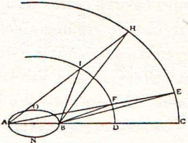
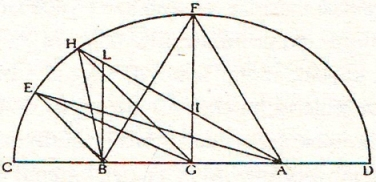
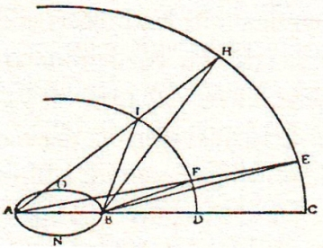
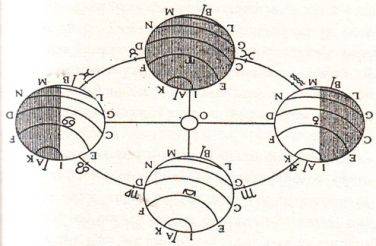

Sagredo – İlk adım olarak iyi bir gelişme sayılır.
Salviati – Doğru söylüyorsunuz. Yazarın Copernicus’a yedirilmek istenen söze dayanarak altıncı büyüklük derecesindeki bir yıldızı tüm Büyük Yörünge kadar büyük saymak istemesine karşılık, biz sadece Güneş’e eşit bir büyüklükte kabul ederek (Güneş Büyük Yörünge’nin 10 milyonda 1’inden de küçüktür) şunu ortaya koymuş olduk: Güneş’i altıncı büyüklük derecesindeki bir sabit yıldızın büyüklüğüne eşit saymakla o denli yüksekliğe ve büyüklüğe kavuşturuyoruz ki bu, Copernicus’un görüşüne yöneltilen itirazları ortadan kaldırmaya yeterlidir.
Sagredo – Şu hesabı yapar mısınız benim hatırım için?.
Salviati – Hesabı kısa yoldan kolayca yapacağım. Güneş’in çapı Yerküre’nin 11 yarıçapı eder ve Büyük Yörünge’nin çapına, tarafların ortak kanısına uygun olarak, 2.416 Yerküre yarıçapı sığıyor; böylece Büyük Yörünge’nin çapı Güneş’in yaklaşık 220 defa çapını ihtiva eder. Küreler kendi aralarında çaplarının küplerine eşit olduklarından, 220’nin kübü 10.648.000 eder ve Büyük Yörünge’nin büyüklüğü Güneş’in büyüklüğünden 10.648.000 defa fazladır. Oysa bu yazar altıncı büyüklük derecesindeki bir yıldızı Büyük Yörünge kadar büyük kabul ediyordu.
Sagredo – Onların yaptığı yanlışlık, demek, sabit yıldızların görünür çaplarını alırken yanılmalarından ileri geliyor.
Salviati – Yaptıkları yanlış budur işte, ama yalnızca bundan ibaret değil ve doğrusu ya, şaşıp kaldım; isim yapmış ünlü bunca astronomun örneğin Alfagrano, Albategno,
Tebizio’nun ve çağdaşlardan Tycho’ların, Clavii’lerin kısacası bizim dostumuz akademi üyesinden önceki tüm seleflerinin, tüm yıldızların, sabit yıldızlar olsun gezegenler olsun, bunların büyüklüklerini ölçmede böylesine aldanmalarına aklım ermiyor. Yalnızca gökyüzündeki bizim iki ışık kaynağımızın yani Ay ve Güneş’in boyutunda yanılmamışlar. Bu ikisi hariç hepsinde aldanmışlar. Gökcisimlerinin ışık saçaklanmasına, ışığı püskül püskül yaymalarına da dikkat göstermemişler; oysa bu ek ışıltı gökcisimlerini yüz defa ve daha da fazla büyük gösteriyor aslından. Onların bu ihmali affedilemez çünkü rahatça izleyebilirlerdi. Öyle ya, yıldızlara ilk belirdikleri sırada ya da sabah şafak sökerken soldukları sırada bakmak, farkı görmek için yeterliydi; hiçbir şey yapmasalar bile Venüs’ü incelemeleri yeterdi. Venüs öğlen vakti çoğu günler öyle küçük görünür ki gözlerinizi kısıp keskin bakışlarınızı gerektirir. Oysa bir sonraki gece Venüs bir meşale gibi belirir: Bu bile yanılgılarını onlara anlatmaya yeterdi. Gecenin derin karanlığında gördüklerinin gerçek disk olduğuna inanacaklarını sanmıyorum. Işıklı ortamdaki de doğruyu göstermez çünkü bizim ışıklarımız geceleyin uzaktan büyük görünürler ve yakından küçücük, sınırları çerçevelenmiş gibi belirginleşir: Bu olguların onları uyarması icap ederdi. Kanaatimi daha açık söylemem gerekirse bunlardan hiçbiri, hatta Tycho bile, hani astronomi araç gereçlerini kullanmada usta ve çok titiz Tycho, büyük harcamalar sayesinde kocaman ve dakik gereçler imal etmesine rağmen, Güneş ve Ay hariç, başkaca herhangi bir yıldızın görünür çapını ölçmeyi denememişlerdir. Hani göz kararıyla deyimi var ya, sanırım, işte öylesine, çok eski çağlarda yaşamış bir astronomun bu şey işte böyledir diye yaptığı açıklamanın ardından müritlerin hiçbiri o ilk fermanın dışına çıkmamış, hepsi de o bulguya sarılıp kalmışlardır: Çünkü eğer sarılıp kalmamış olsalardı ve o açıklamayı mihenk taşına vurmuş olsalardı aldanışın muhakkak farkına varırlardı.
Sagredo – İyi ama onlarda teleskop yoktu ve siz de dostumuzun gerçeği bu gereçle fark ettiğini söylediğinize göre ondan öncekiler affedilebilirler ve ihmallerinden ötürü suçlanamazlar.
Salviati – Eğer teleskopsuz amaca ulaşmak mümkün olmasa dediğiniz doğru olurdu. Doğru söylüyorsunuz, bu aygıt yıldız diskini çıplak ve yüz defa, hatta bin defa büyütmüş olarak göstermekle işlemi epey kolaylaştırıyor fakat aynı sonuca bu denli dakik olmasa bile yine de ulaşılabiliyor. Ben birçok kez denedim; deney şöyle: Herhangi bir yıldıza doğru kurdele gibi bir ip şeridi sallandırdım. Yıldız olarak kuzey ve kuzeydoğu arasında doğan Şilyak yıldızından yararlandım. Yıldız ve benim aramda sallandırılan kurdeleye yakınlaşarak ve uzaklaşarak, kurdelenin genişliğinin hangi bölümünün yıldızı benden sakladığını tam olarak saptadım; bunu yaptıktan sonra gözümden kurdeleye olan uzaklığı ölçtüm. Bu mesafe, gözde oluşan açıyı içeren kenarlardan biri olup kurdelenin genişliği üstüne oturtulmuş olur ve bu açı yıldızlı kürede yıldızın çapı üstüne oturtulmuş açının benzeridir hatta eşitidir. Kurdelenin genişliğini, gözden kurdeleye olan mesafenin oranından açının miktarını yaylar ve kirişler cetveline bakarak hemen buldum; bunu yaparken her zamanki aşırı dikkate sığındım, bu gibi ince işlerde gösterilmesi gereken dikkate; şöyle ki vizüel ışınların gözün merkezinde oluşmamasına dikkat ettim çünkü buraya muhakkak kırılmış olarak gelirler, fakat vizüel ışınlar buluşmasının gözün ötesinde, gözbebeği büyüklüğünün, vizüel ışınları gerçekten gönderdiği noktada yer almasına dikkat ettim.
Sagredo – Bu itina ve teyakkuz durumunu anlıyorum fakat yine bir şüphem var; bu işlemle ilgili olarak beni rahatsız eden durum, gözlem geceleyin yapıldığında, derin karanlıkta, diskin saçak saçak ek ışın edinmiş haliyle çapının ölçüldüğü ve yıldızın çıplak ve gerçek çapının alınamadığıdır.
Salviati – Öyle değil efendim, çünkü kurdele yıldızın çıplak cismini örtmekle yıldızın püsküllenmiş ışınını kapatıyor; o püsküller ki yıldızın kendisinde mevcut değildir ve fakat bizim gözümüze aittir. Bu nedenle yaptığımız işlemde gerçek diski gizleyen püsküller kayboluyor; eğer siz gözlem yapacak olursanız, araya büyük bir engel sokarak ancak giderilebileceğini sandığınız o epey büyük meşaleyi incecik bir kurdelenin nasıl da umulmadık biçimde örttüğüne tanık olacaksınız. Daha sonra kesin ölçüm yapmak ve gözün uzaklık mesafesine bu kurdeleden kaç tane sığacağını anlamak için kurdelenin çapını, bir kez değil birkaç kez olmak üzere gerektiği kadar kurdeleler alıp, onları birbirine değecek şekilde bir masa üstüne dizerek ve bu kurdelelerden 15 ya da 20 tanesinin kapladığı alanı pergelle ölçerek ve bu ölçüyle uzaklığı, daha önce kurdeleden tek kurdeleyken vizüel ışınların buluştuğu yere kadar olmak üzere alınmış uzaklık mesafesine bakarak, saptayabiliyorum. Bu dakik ve oldukça kesin sonuç veren işlemle birinci büyüklük derecesinden bir sabit yıldızın görünen çapını ölçebiliyorum: Genellikle, 2 dakika ve Tycho’nun Astronomi Mektupları kitabının 167. Bölüm’ünde 3 dakika olarak kabul edilen birinci büyüklük derecesindeki yıldızın 5 saniyeden fazla olmadığı ortaya çıkıyor benim uyguladığım yöntemle. Bu sayılar gösteriyor ki benim bulduğum sayı onların sandığının 24’te biri ya da 36’da biri oluyor ki onların ne denli yanlış doktrinlere dayandıkları hakkında fikir veriyor.
Sagredo – Anlıyorum söylediklerinizi, durumu çok iyi anladım ama daha fazla ilerlemeden şunu söylemek istiyorum yani çok dar açılar dahilinde kalan cisimler gözlendiğinde vizüel ışınların gözün ötesinde buluşmalarının sağlanmasındaki işlem konusundaki şüphemden söz açmak istiyorum. Bu şüphem de şuradan doğuyor: Vizüel ışınların buluşması ya daha uzağa düşebilir ya da daha beriye; bu da gözlenen nesnenin daha büyük ya da daha küçük olmasından ötürü değil de aynı büyüklükteki nesnelere bakarken ışınlar randevusunun muhakkak bir başka nedenle gözden az ya da daha çok uzakta gerçekleşmesi ihtimalinden doğuyor.
Salviati – Bay Sagredo’nun keskin görüşüyle, doğa olgularını gözlemlemekteki titizliğiyle nereye varmak istediğini anladım. İstediğiniz bahse girerim ki kedilerde gözbebeğinin kısılması ya da genişlemesi olgusunu gözlemlemiş 1000 kişi arasında 2 kişi yoktur ki hatta 1 kişi yoktur ki insanların da bakarken, ortamın çok ya da aydınlık olması durumuna göre, gözbebeğinde böyle bir etki oluştuğunu fark etmiş bulunsun. Fazla ışıkta gözbebeği dairesi küçülür, epey küçülür, öyle ki Güneş diskine baktığınızda bir susam tanesi küçüklüğüne iner. Aydınlanmamış nesnelere baktığınızda ve az aydınlık ortamda bir mercek büyüklüğüne ulaşır hatta mercek boyutunu aşar bile. Özet olarak bu kısılma ve genişleme oran olarak 10 kat fazla ya da eksik olabilir: Buradan da anlaşılıyor ki gözbebeği çok genişlediğinde, vizüel ışınların buluşmasına ait açının gözün ötesine yani gözden daha uzağa isabet ettiğidir ki bu da az aydınlık nesnelere bakarken olur. İşte Bay Sagredo’nun bende sağladığı yeni bir görüş açısı: Bay Sagredo’nun ilham verdiği bu yeni kural gereğince, sonuçları bakımından büyük önem taşıyan bir gözlem yapılacağı zaman, vizüel ışınların buluşmasına ait saptamanın, gözlem konusu incelendiği sırada yapılması gereği kulağımıza küpe olsun. Astronomların yaptıkları hataları ortaya dökmek için bu denli bir titizliğe gerek yok, çünkü biz sırf hatır için vizüel ışınların gözbebeğinde yer aldığını kabul etsek bile hata payı o denli büyük ki pek fark etmez. Acaba bu nokta mıydı Bay Sagredo sizi harekete sevk eden?
Sagredo – Evet, tam buydu ve sorumun mantıksız olmadığına sevindim, sizin anlattıklarınızda buluştuğumuza göre; fakat bu vesileyle vizüel ışınlarının buluşma yeri mesafesinin nasıl ölçüldüğünü öğrenmek isterdim.
Salviati – Yöntem çok kolaydır ve şöyledir: Kâğıttan iki şerit parçası alıyorum, biri siyah diğeri beyaz; siyah şerit beyaz şeridin yarısı kadardır, sonra beyazı bir duvara yapıştırıyorum ve onun 15 ya da 20 arşın uzağına bir çubuk ya da başka bir destek üzerine diğer kâğıt şeridini raptiyeliyorum. Bu ikinci kâğıttan aynı miktar mesafe kadar ve aynı doğrultuda uzaklaşınca, herkesçe malumdur ki bu uzaklıkta olduklarında beyaz kâğıdın genişliğinin kenarlarından hareket eden doğrular, ortadaki diğer siyah kâğıdın genişliğine değerek geçeceklerdir. Bu doğruların akışını karşılayan gözümüzde, ortadaki siyah şeridin, karşısındaki beyaz şeridi tamı tamına örterek gizleyeceği bilinir, eğer bakışımız bir tek noktada yoğunlaşabiliyorsa; fakat beyaz şeridin ucunun açıkta kalmış bölümü olduğunu görürsek beyaz şeridin siyah şerit tarafından tam örtülmesi yani görülemeyecek gibi kapanması için gözümüzü birazcık yakınlaştırmamız gerekir. Demek ki gözümüzü uzaktaki beyaz şerit orta yerdeki şerit tarafından işgal edilip örtülecek gibi yakınlaştırırsak ve ne miktar yaklaştığımızı not edersek bu yaklaşma miktarı, bu işlemdeki vizüel ışınların akışının gerçek buluşma yerinin kesin mesafesini verir; üstelik gözbebeği çapını yani vizüel ışınların çıktığı deliğin çapını da öğrenebiliriz bu işlemden. Nitekim gözbebeği çapı, siyah şeridin genişliğinin öyle bir parçası kadar olacaktır ki şu kadarlıktır diyeceğimiz bu parçanın öğrenilmesi, kâğıtların uçlarından üretilen doğruların buluşma yeri ile uzaktaki kâğıdın ortadaki kâğıt tarafından tamamen örtüldüğünü saptamak için gözün yaklaşma yapıp durduğu daha önceki yer arasındaki mesafe farkı ile mümkün olacaktır. Böylece bir yıldızın görünür çapını mükemmel bir ölçümle hesaplamak istersek yukarıda anlattığımız şekilde gözlem yaptıktan sonra ipin çapıyla gözbebeği çapı karşılaştırmalıyız ve diyelim ki ipin çapını gözbebeği çapının 4 misli olarak bulduk ve ipe gözün uzaklığını da, örneğin 30 arşın, o takdirde diyeceğiz ki yıldızın çapının kenarlarından üretilerek ipin çapının kenarlarından geçen söz konusu hatların birleştiği yer ipten 40 arşın uzaktır: İple söz konusu hatların birleştiği yer arasındaki oran ve bu birleşme yeriyle gözün bulunduğu yer arasındaki mesafe, ki ipin çapı ile gözbebeği çapı arasına düşenle aynı olması gerekir, böyle izlenmelidir.
Sagredo – Çok iyi anladım ama Bay Simplicio’nun
Copernicus’un muhalifleri hakkında söyleyeceklerini dinleyelim bakalım.
Simplicio – Her ne kadar Copernicus’un muhalifleri tarafından öne sürülen o inanılmaz büyük gaf Bay Salviati’nin yürüttüğü muhakemeyle epey tamirden geçtiyse de kendisi o fikri yere çalmak için indirilecek darbeye artık gerek yok dedirtecek kadar da sendeler duruma düşmemiştir sanıyorum. Eğer özet olarak ve son tahlilde ne demek istenildiğini iyi anladımsa altıncı büyüklük derecesindeki bir yıldızın Güneş kadar büyük olduğu kabul edilirse (ki bu bile inanılması zor bir büyüklük gibi geliyor bana) bu durumda Büyük Yörünge’nin yıldızlı kürede, tıpkı Yerküre yarıçapının Güneş’te belli edeceği değişiklik kadar bir görünüm değişikliğini ortaya koyduğu gerçeği söz konusudur. Ne böyle bir şey ne de bundan daha az bir değişiklik fark edilemediğine göre sabit yıldızlarda, sanırım bundan ötürü Yerküre’nin dönüyor olması fikri bir kenara itilmiş oluyor hazin bir biçimde.
Salviati – Sizin konuşmalarınız, Bay Simplicio, ikna edici olabilirdi şayet Copernicus lehine öne sürülecek başka dayanaklar olmasaydı. Fakat daha epey dayanak ve gerekçe var. Sizin verdiğiniz cevaba bakarak şunu söyleyebiliriz ki sabit yıldızları, belirlediğimiz uzaklıktan daha da uzağa yerleştirmemiz için bize engel olacak bir neden yoktur; sizin ve Batlamyus’un müritlerinin önermelerine halel gelmesini istemeyen herhangi bir kimsenin yıldızlı küreye, şimdi bizim bulguladığımız büyüklükten daha da fazlasını tanıması kendi lehine olur. Şöyle ki tüm astronomlar gezegenlerin dönüş sürelerindeki yavaşlığın, küre yörüngelerinin daha büyük oluşundan ileri geldiği noktasında birleştiklerinden, bu nedenle Satürn’ün Jüpiter’e kıyasla bir turunu daha yavaş bitirdiğini ve Jüpiter’in de Güneş’ten daha yavaş olduğunu, onun atacağı tur için bununkine kıyasla daha büyük bir daire çizdiğini ve diğeri de öbüründen vb. söylerler; örneğin Satürn’ün yörüngesinin Güneş’in yörüngesinden 9 kat daha yüksek olduğunu, bu yüzden Satürn’ün bir turunun aldığı zamanın Güneş’inkinden 30 defa fazla olduğunu göz önünde tutarak; Batlamyus doktrininde yıldızlı kürenin bir dönüşünün 36.000 yılda tamamlandığı söylendiğinden, oysa Satürn’ün 30 yılda, Güneş’in de 1 yılda dönüş yaptığı ifade edildiğinden, benzer karşılaştırmalara dayanarak şöyle diyorlar: Satürn’ün yörüngesi Güneş’in yörüngesinden 9 defa büyük olduğu için 30 misli bir sürede dönüyorsa bunun tersi bir dayanak kullanarak 36.000 yılda bir tur atan yörünge ne kadar büyük ve yavaş dönüyor olmalı? Yıldızlı kürenin uzaklığının Büyük Yörünge yarıçapının 10.800 defa kadar mesafede olduğu bulgusuna varılacaktır ki bu da şu demektir: Az önce altıncı dereceden bir yıldızı Güneş büyüklüğüne eşit kabul ederek yaptığımız hesaplamadaki mesafenin 5 katıdır. Şimdi anlıyorsunuz değil mi, Yerküre’nin dönme hareketinin sabit yıldızların konumuyla karşılaştırılarak kendini belli etmesi gerekir denen değişikliğin ne kadar daha minicik olması gerektiğini? Ve benzer bir ilişkilendirmeyle yıldızlı kürenin Jüpiter’den ve Mars’tan uzaklığını hesaplamaya kalksak onun 15.000 ve bunun da 27.000 Büyük Yörünge yarıçapı kadar olduğunu buluruz yani altıncı büyüklük derecesinden sabit yıldızı Güneş’in büyüklüğü ile eş saydığımızdaki uzaklıktan 7 ve 12 misli fazla.
Simplicio – Buna verilebilecek cevap, yıldızlı kürenin hareketinin Batlamyus’un sandığı kadar yavaş olmadığının sonradan anlaşıldığıdır; hatta sanıyorum, Copernicus’un kendisi böyle bir ifade kullanmış.
Salviati – Konuşmanız güzel ama Batlamyusçular’ın davasını güçlendirici bir şey söylediğiniz yok, çünkü bu kadar yavaş hareketli yıldızlı küreyi çok büyük ve engin kılıyor gerekçesi göstererek 36.000 yılda bir dönüş hareketine karşı çıkan olmadı hiç; eğer doğada böylesine engin bir büyüklüğün olabileceği fikrini benimsemiyorlardıysa bunu şimdi değil çok önce reddetmeliydiler, böylesine yavaş bir dönme hareketinin, kabullenilemeyecek büyüklükte bir küreye yaraşabileceğini belirterek.
Sagredo – Lütfen Bay Salviati, ölçüsüz orandaki şeylerin varlığını rahatça kabule hazır insanlara böyle oranlar ve orantılar anlatarak daha fazla vakit kaybetmeyelim, çünkü bu yolda onlarla hiçbir şey kazanamayız. Bu insanlar ki göksel küreleri bir düzene kavuşturmanın bu cisimlerden en yavaş dönenlerini, derece derece daha hızlı dönen cisimlerin üstüne yerleştirerek onları dönüş periyodlarına göre bir sıraya sahip kılmakla mümkün olabileceğini yazıyorlar, en üste ve en yükseğe kondurulmuş yıldızlı küre yapısını kurduktan sonra, üstüne daha büyük bir küre kondurup onu 24 saatte dönüyor kabul ediyorlar: Oysa onun altındaki yıldızlı küreye 36.000 yılda bir dönüş tanıyorlar! Bu ölçüsüzlüklerden ve ölçüsüz oranlardan bir gün önce zaten yeterince bahsetmiştik.
Salviati – Siz Bay Simplicio, bir an için, sizin kanaatinizi paylaşanlara karşı duyduğunuz yakınlığı bir kenara bırakarak içtenlikle söyleyebilir misiniz, onlar, enginliği nedeniyle Evren’e tanımak istemedikleri o büyüklüğü zihinlerine sığdırabiliyorlar mı, zihinlerinde bir fikir sahibi midirler bu büyüklük hakkında; çünkü şahsen bana, böyle bir şeye sanki sahip değillermiş gibi geliyor. Öyle ki sayıların algılamasına geçildiğinde, önünüzden o milyonların binlercesiyle, bin milyon sayılarının akıp gitmesiyle hayal gücünüz yitiyor ve kavramların sınırları zorlanıyor. Böyle bir şey engin mesafeler ve büyüklükler için de olabiliyor. Duyularımızın uğradığına benzer bir duruma aklımız da uğrayınca, sakin bir gecede, yıldızlara doğru bakarken onlar sanki birkaç mil ötedeymiş gibi geliyor insana; sabit yıldızlar sanki Jüpiter ya da Satürn’den hatta Ay’dan bile uzak değilmiş gibi oluyor. Bırakın her şeyi bir kenara ve sadece peripatetikçi astronomlar ve filozoflar arasında Koltuk ve Nişancı takımyıldızlarının yeni yıldızlarına ait uzaklığa ilişkin patlak veren tartışmaları gözünüzün önüne getirin: Astronomlar sabit yıldızlar arasına yerleştirirken filozoflar bu yıldızları, Ay’ın bile altındaki yüksekliklere kondurmuşlardır. İşte böylesine güçsüzdür duyularımız büyük mesafeleri daha büyüklerinden ayırt etmekte, oysa bunlar öbürlerinden binlerce kez daha uzaktadırlar. Nihayet şunu soruyorum ey budala insan: Önce, sen Evren’in enginliğini algılayabiliyor musun ki ardından bu enginliği Evren’le özdeşleştiremiyorsun? Eğer hayal gücünün sınırları içine sığdırabiliyorsan senin algılayış sınırlarını Tanrısal büyüklüğün sınırlarını aşabileceğini tahmin ediyor musun ve sen Tanrının yaptığından daha büyük şeyler hayal edebildiğini mi söylemek istersin? Eğer anlayamıyorsan neden anlamadığın şeyler hakkında hüküm vermeye kalkıyorsun?
Simplicio – Bu konuşmalar iyi ilerliyor ve gökyüzü büyüklüğünün bizim hayal gücümüzü aşamayacağı inkâr edilemez ama Tanrının şimdi olduğundan bin defa daha büyük yaratmış olabileceği de inkâr edilemez: Ne var ki Evren’de hiçbir şeyin boşu boşuna ve tembel tembel işe yaramaz durumda yaratılmış olduğunu kabullenmemeliyiz; şimdi biz, Yerküre’de bizim yararımıza etkiler yaratmak üzere Yerküre etrafında oranlara uygun bir dizin içinde sıralanmış gezegenlerin şu güzel düzenini görürken Satürn’ün yörüngesiyle yıldızlı küre arasına yıldızsız ve engin kocaman bir alan tanımak niye? Hangi amaçla böyle bir şey var olabilir? Böyle bir şey kimin yararına olabilir ki?[138]
Salviati – Biraz fazlaca küstahlaşıyoruz sanırım Bay Simplicio, Tanrısal gücün yarattığı uygun eserin yalnızca bizlerin yararına olmasını ve onun dışında başka bir şey yapmamasını ya da imkân tanımamasını istemekle... Oysa ben onun uzandığı yerin bu denli dar tutulmasından yana değilim; Tanrının ve doğanın, insan türüyle ilgilenmekten başka bir işlevi yokmuşçasına zaten insanlara ilişkin şeylerle meşgul olduğunu ve hatta yeterince meşgul olduğunu bilmenizi ve bununla yetinmenizi isterim. Bu durumu çok uygun ve soylu bir örnekle anlatmak için Güneş’in ışığının gördüğü işten söz açmalıyım. Güneş o bitkiyi ısıtıp su buharını kendine doğru çekerken onları öylesine ısıtıyor ve çekiyor ki sanki başka hiçbir işlevi yokmuş gibi yapıyor; o üzüm salkımını, hatta yalnızca o buğday tanesini olgunlaştırırken sanki tek işi buymuş gibi kendini bu işe adıyor.
Eğer bu buğday tanesi Güneş’ten alabileceği her şeyi alıyor da Güneş’in aynı zamanda başka binlerce ve binlerce etkisi arasından kendine ait olan ondan esirgenmiyorsa, güneş ışınlarının yalnızca kendi yararına kullanılmasını istemeye kalkışırsa bu tanenin hasetlik ve budalalıkla suçlanması gerekirdi. Eminim ki ilahi kudret, insan ihtiyaçları yönetimi için beklenenden hiçbir şey esirgemez; fakat Evren’deki onun sonsuz kudretine bağımlı başka şeylerin olmayacağı aklımın almayacağı bir noktadır; bununla beraber durum benim düşündüğümün aksiyse daha yüksek bir akıl kaynağınca bana ifade edilecekleri reddetmek için bir direnişim olmaz. Bu arada gezegenlerin yörüngeleriyle yıldızlı küre arasına muazzam enginlikte bir saha ayırıp yıldızsız ve işe yaramaz tembellikte bir yer tutmanın gereksiz ve boşuna olduğunu ve aynı zamanda sabit yıldızların konaklaması için bizim algılayışımızın tamamen dışında böylesine büyük bir alan ayırmanın da fuzuli olduğunu söylemek cürettir derim: Tanrının eserlerini bizim cılız akıl gücümüzün yargılaması ve bizim işimize yaramıyor diye[139] o eserlere boş ve fuzuli demek cürettir.
Sagredo – Şöyle diyebilirsiniz ve herhalde daha iyi ifade etmiş olursunuz: “Biz bilemiyoruz işimize yarayıp yaramadığını.” Çünkü bence küstahlıkların ve hatta deliliklerin en büyüğü olur “Jüpiter’in ve Satürn’ün ne işe yaradıklarını bilmediğim için bunlar fuzulidir hatta doğaya dahil değildir” sözünü etmek. Oysa, ey zavallı ben, damarların ne işe yaradığını bilmiyorum, kıkırdaklar, safra kesesi, hatta öd ne işe yarar bilemiyorum; eğer cesetlerde teşrih yapmasalar ve göstermeseler safra kesesine, öd parçasına ya da böbrek diye bir şeylere sahip olduğumu, bilemeyeceğim; ancak safra kesem alınırsa o takdirde anlarım onun ne işe yaradığını. Hangi gökcisimlerinin, şu gökcisminin mi diğerinin mi, bende ne gibi bir etki yaptığını anlamam için (madem ki onların her işleyişinin bize hitap etmesini istiyorsun), bir süre o cismi yerinden sökmek gerekir ki ben de üzerimden eksilen etkinin o yıldızdan kaynaklandığını söyleyebileyim. Hem sonra, onların çok engin ve yararsız dedikleri alanın yani Satürn gezegeni ile yıldızlı küre arasındaki alanın başkaca cisimlerden, Evren cisimlerinden yoksun olduğunu kim söyleyebilir ki? Acaba biz onları göremediğimiz için mi böyle demek istiyorlar? Nitekim dört Medicei gezegeni ile Satürn’ün yoldaşları, ancak biz onların varlığını fark edince mi gökyüzünde ispatı vücut etmiş oldular? Daha önce var değiller miydi? Sonsuz sayıdaki sabit yıldızlar da insanlar tarafından görülmeden önce yoklar mıydı yerlerinde? Nebülozlar daha önce bembeyaz boşluklardı da sonradan mı teleskop onları çok güzel ve parlak yıldız bayraklarına dönüştürdü? Kendine fazla paye biçen hatta cüretkâr cehaleti bu!
Salviati – Verimsiz ve abartılı bu gibi konuşmalara yayılmaya gerek yok artık Bay Sagredo. Biz, bellediğimiz asıl yolda ilerleyelim, gerek bir tarafın gerek diğer tarafın ortaya koyduğu önemli düşünceleri ele alalım ve hiçbir şeye bağlamadan bu düşünceler hakkında karar vermeyi bizden daha çok bilen kişilere bırakalım. Şimdi doğa ile insana ait konuşmalarımıza dönerek diyorum ki şu “büyük, küçük, engin, asgari vb.” nitelemeler mutlak olmayan nitelemelerdir, görecelidirler, öyle ki aynı bir şey değişik şeylerle karşılaştırılınca engin denilebilecek gibidir de başka şeylere kıyasla fark edilemeyecek küçüklüktedir ya da doğrudan küçücüktür. Durum böyleyken soruyorum, Copernicus’un yıldız küresi hangi şeye göreceli olarak engin kabul edilir? Bence buna böyle diyebilmek için aynı türden bir başka şeyle mukayese edilebilmesi gerekir: Şimdi aynı türün en küçüğünü alalım yani Ay yörüngesini demek istiyorum.
Eğer yıldızlı kürenin yörüngesi Ay’ın yörüngesine göre çok engin bulunuyorsa benzer ya da daha büyük oranda aynı türden bir başka büyüklüğü aşan her büyüklük için çok engin denilecektir ve hatta bu yüzden böyle bir şeyin dünyada mevcut olmadığı söylenecektir: Örneğin filler ve balinalar birer ucube yaratık ve masalları süsleyen ozan hayalleri olarak niteleneceklerdir, çünkü onlar, karıncaların yanında çok engin boyutludurlar. Karıncalar kara hayvanlarıdır fakat diğerleri yani balinalar birer iğne başı küçüklüğündeki balık yavrularıyla mukayese edildiklerinde ölçüye sığmayan boyutlardadır. Bunlar arasındaki oran, yıldızlı kürenin Ay küresine göre büyüklük oranından daha fazladır. Yıldızlı kürenin büyüklüğünün Copernicus Sistemi’nin öngördüğü büyüklükte olduğunu kastediyoruz. Üstelik Jüpiter küresi ve Satürn küresi bir yıldıza tahsis edilmiş boyut olarak ne kadar büyüktürler ki bir sabit yıldızın büyüklüğü yanında pek küçük sayılsınlar. Muhakkak her sabit yıldıza Evren’in bir parçası verilse sayısız yıldız çokluğunun barındığı yörüngeyi Copernicus’un öngördüğü ihtiyaçtan binlerce ve binlerce kez daha büyük tutmak gerekir. Kaldı ki siz, gözün zor gördüğünü değil de görünürlüğü belirgin olan bir sabit yıldızı bile çok küçük olarak nitelemiyor musunuz? Böyle konuşmamızın nedeni sabit yıldızların çok dağınık bir alana serpiştirilmiş olmalarındandır. Şayet yıldızlı kürenin tümü, yek vücut olarak parlayan tek bir cisim olsaydı, kim iddia edebilirdi ki sonsuz mekândaki bu parıltılı kürenin öylesine uzak ve çok uzak bir mesafede olmasına rağmen şu anda bir sabit yıldızın Yerküre’deki bizlere göründüğü kadar küçük görülmeyeceğini? Bunu anlamayacak kimse çıkar mı acaba? Böylece şimdi ölçüye sığmayacak büyüklükte diye nitelediğimiz aynı şeyi o zaman küçük diye niteleyecektik.
Sagredo – Tanrının, Evren’i engin hatta sonsuz gücüne göre yaratmış olması yerine kendi küçücük akıllarının yetisine orantılı olarak yapmış olmasını isteyenlerin akılsızlığına şaşıyorum.
Simplicio – Tüm bu söyledikleriniz iyi de diğer tarafın itiraza konu ettiği şey bir sabit yıldızın yalnızca Güneş’e eş büyüklükte olduğunun kabulü değil, aynı zamanda Güneş’ten de büyük olduğunun öne sürülmesi noktasıdır. Kaldı ki her ikisi de yıldızlı yörünge dahilinde yer alan özellikli cisimlerdir. Bu yazarın şu sorusu bence yerindedir: “Böylesine engin makineler kim için ve hangi neden uğruna yaratılmışlardır? Bunlar acaba Yerküre için yani cim karnında bir nokta sayılan Yerküre için mi? Ve neden bu kadar uzaktalar? Küçücük görünsünler de Yerküre üzerinde bir etki icra etmesinler diye mi? Onlarla Satürn arasında uygunsuz enginlikte bir boşluğun ne amacı olabilir ki? Aklın muhtemel sayacağı dayanaklardan yoksun her şey gereksizdir.”
Salviati – Bu adamın sorduğu sorularda, bana öyle geliyor ki eğer gökyüzü, yıldızlar ve bugüne dek miktarına ve büyüklüğüne inandığı mesafeler bir kenara bırakılırsa (her ne kadar akla yakın bir mesafe büyüklüğünü hiçbir zaman sağlam olarak göz önünde bulunduramamışsa da) bir şeyler seziyor gibiyim. Onlardan, Yerküre’ye gelebilecek yararlardan sanki haberi varmış gibi konuşuyor ki bu da Yerküre’yi değerlendirme açısından yabana atılacak bir şey değil. Yıldızların böyle küçük görünmelerinin pek de öyle fazla uzak olmalarından kaynaklanmadığını, Yerküre üzerinde etkilerini göstermeye yetecek kadar büyük olduklarını ve yıldızlarla Satürn arasındaki uzaklığın iyi bir orana sahip bulunduğunu ifade ediyor ve bunların muhtemel gerekçelerinden söz ediyor.
Tüm bunlardan bir parça bir şeyler dinlemek isterdim. Fakat bu az sayıdaki sözler arasında aklının karıştığını, çelişkiler yaşadığını görünce de bu muhtemel gerekçeler konusunda cılız düşüncelere sahip olduğu aklıma geliyor ve sanıyorum ki gerekçe dediği şeyler daha çok boş şeyler, hatta boş hayallerin gölgeleri gibi geliyor bana. Bu nedenle ben şimdi ona, bu gökcisimlerinin gerçekten Yerküre üzerinde etki yapıp yapmadıklarını, bu etkiyi yapsınlar diye mi şu ve şu büyüklükte yaratıldıklarını, böyle ve şöyle mesafelere dizildiklerini sormak istiyorum; yoksa yeryüzüyle bir ilişkileri yok mudur? Eğer yeryüzüyle bir ilişkileri yoksa onların büyüklüklerinin hakemliğini ve kendi bölgelerindeki dizinlerinin düzenleyiciliğini biz Yerküre sakinlerinin yapmak isteyişi büyük budalalıktır. Çünkü onların işlerinin ne olduğundan ve ilgilerinden haberimiz yok. Ama eğer derse ki etkileri vardır ve bu amaca yöneliktirler, başka bir açıdan kendisinin reddettiğini kabullenmiş ve şu anda eleştirdiğini övmüş oluyor, çünkü gökcisimleri Yerküre’den o denli uzaktalar ki yeryüzüne etki yapamayacak kadar küçük görünüyorlar diyordu. İyi de adamcağızım benim, bellediğimiz yerde olan ve sizce yeryüzüne etki yapacak gibi orantılı bir ölçü içinde bulunan yıldızlı kürede birçok yıldız çok küçük görünüyor ve bizce görülemeyen yüzlercesi daha var (bunlar artık çok küçük değil de görülemeyecek gibiler): Bu durumda sizin (dediklerinizi inkâr ederek) onların yeryüzüne etkisini inkâr etmeniz gerekir ya da (yine dediklerinizi inkâr ederek) onların çok küçük görünmesi onları Yerküre üzerindeki etkilerinden alıkoymaz ya da (ki bu daha samimi ve mütevazı bir itiraf olacaktır) açıkça ve serbestçe itiraf ediniz ki onların büyüklükleri ve mesafeleri boş bir hayale dayanmaktadır, eğer boş iddia ya da cüret demek istemiyorsak.
Simplicio – Doğrusu ya, ben de o bölümü okurken hemen fark ettim çelişkiyi: Copernicus’un yıldızları, lafın gelişi olarak Copernicus’un dedim, çok küçük göründüklerinden Yerküre üzerinde etki yapamazlar demesine karşılık Batlamyus’un ve o yazarın kendi yıldızları, minicik olmaktan öte, görülemeyecek kadar oldukları halde, yeryüzüne etki yapabiliyorlarmış.
Salviati – Şimdi ben başka bir noktaya geliyorum: Acaba hangi temele dayanarak o yıldızların bu kadar küçük göründüklerini söylüyor? Bize küçük görünüyorlar diye mi acaba küçüktürler? Bilmiyor mu ki bunun nedeni bizim ona bakmamıza yarayan aygıttan ileri geliyor yani bizim gözlerimizdir nedeni? Bunun doğru olduğu da bakış aygıtını değiştirince onları büyük ve daha büyük görmemizden belli: Kim bilir, onlara, gözleriyle bakıyor olmayan Yerküre’ye büyük, gerçekte oldukları kadar büyük görünüyor olmasınlar? Artık bu gibi hafiflikleri bırakıp daha önemli noktalara gelelim. Ben şu iki şeyi kanıtlamış bulunuyorum. İlk olarak; göğün bize mesafesi ne uzaklıkta olmalı ki Büyük Yörünge’nin çapının onda yaratacağı konum değişikliği Yerküre yörüngesinin Güneş mesafesinde yarattığı konum değişikliğinden daha fazlasına yol açmasın. İkinci olarak, şunu kanıtladım: Gökyüzündeki bir yıldızın bizim onu gördüğümüz büyüklükte görülmesi için Güneş’imizden daha büyük olmasının gerekmediği. Şimdi şunu öğrenmek isterim: Acaba Tycho ya da onun taraftarlarından biri Yerküre’nin[140] yıllık hareket halinde olduğunu daha kesin biçimde kabul ettirici ya da reddettirici herhangi bir görünümle karşılaşmışlar mıdır?
Sagredo – Ben onlar adına hayır derdim, zaten buna hiç ihtiyaç da yok; Copernicus’un kendisi, böyle bir değişiklik fark edilemez diyor. Oysa onlar sırf kişiye karşı çıkmak amacıyla kabule yanaşıyorlar ve bu varsayımı izleyen imkânsızlığı göstermeye çalışıyorlar yani yıldızlı küreyi o denli büyük yapmak gerekir ki diyorlar, bir sabit yıldızın göründüğü kadar büyük görünmesi için gerçekte Yerküre’mize ait Büyük Yörünge’nin tüm büyüklüğünü de aşacak engin bir heybette olması şartını savunuyorlar: Sonra da böyle bir şeye inanılması imkânsızdır diye geçiştiriyorlar.
Salviati – Ben de aynı fikirdeyim ve inanıyorum ki onların birine karşı çıkmalarının nedeni, başka birine savunmak içindir, yoksa gerçeğin öğrenilmesi uğruna karşı çıkıyor değiller. Onlardan birinin böylesi bir gözlemde bulunmaya girişmiş olduğuna hiç inanmıyorum ve Yerküre’nin yıllık hareketinin sabit yıldızlarla mutabakat açısından nasıl bir konum değişikliği göstereceğini de bilmiyorlardır. Şunu demek istiyorum: Konum mutabakatında ele vermedikleri farkı ele vermeleri için acaba yıldızlı kürenin ne miktar aşağı çekilmesi gerektiği hesabını da biliyorlar mı? Bir de şu var ki böyle bir araştırmadan vazgeçip sadece Copernicus’un sözlerine razı olmak insanı ikna etmeye yetebilir ama olguyu aydınlatmaya yetmez: Ola ki konum farkı sunmaktadır da bulgunun izini sürmek için araştırma sürdürülmemiştir ya da konum değişikliğinin fark edilemez küçüklükte oluşu veya aygıt yetersizliği yüzünden Copernicus tarafından anlaşılamamıştır. Copernicus’un aygıt yetersizliğinden ya da başka bir kusurundan ötürü bilemediği ilk şey değildir bu, ama bilememesine rağmen başkaca sağlam kanaatlere dayanarak anlamadığı şeylerin doğrularını bulduğu olmuştur. Nitekim daha önce söylediğimiz gibi teleskop icat edilmeden, bir pozisyonla diğer pozisyon arasındaki farklar ne Mars’ın 60 defa büyük gözükmesini ne de Venüs’ün 40 defa büyük gözükmesini ortaya koyabilirdi. Hatta farklar gerçeğinden daha küçük gözüküyor. Buna rağmen sonradan yapılan kesin sonuçlu araştırmalar bu değişikliklerin kıl payı farkla Copernicus Sistemi’nin öngördüğü gibi olduğunu ortaya koydu. Şimdi de Yerküre dönüyor olduğu takdirde, bu harekete karşılık sabit yıldızların konumundaki görünüş değişikliğinin fark edilmesi amacıyla, çok iyi tespitlerin gerçekten yapılıp yapılamayacağı konusuna geldi sıra.
Bugüne dek böyle bir araştırmanın kesinlikle yapılmadığı kanısındayım; böyle bir gözlemi değil yapmak, neyin gözlemlenmesi gerektiğine dair fikir sahibi olan bile çıkmamıştır. Böyle bir konuşmayı laf olsun diye yaptığım sanılmasın, çünkü Copernicus’a muhalif kişilerden birinin dosyaları arasında gördüğüm bir notta şöyle deniyordu: Yerküre’nin döndüğü doğruysa bunun mecburi sonucu olarak kutbun 6 aydan 6 aya sürekli yükselme ve alçalma göstermesi gerekir; Yerküre’miz 1 yılda Büyük Yörünge çapı kadar yol kat ettiğine ve bir kuzeye bir güneye gidip geldiğine göre. Ona bakılırsa Yerküre’de olan bizler için kuzeydeyken Kutupyıldızı’nın yükselimi artıyor, güneyde bulunmamıza kıyasla. Aynı hataya oldukça akıllı bir matematikçi, Copernicus taraftarlarından biri olmasına rağmen, düştü. Matematikçiye ait bilgiyi veriyor kitaplarından birinde (Proginnasmi, fasikül 648). Matematikçi, kışın ve yazın Kutupyıldızı yüksekliminin değiştiğini gözlemlediğini söylüyordu, Tycho bir değişiklik olmadığını açıklamakla birlikte yöntemi eleştirmiyor ve 6 aydan 6 aya bir değişiklik olsa da olmasa da Yerküre’nin dönüp dönmediğinin bir kanıtını bulmak için bunun iyi bir araştırma yöntemi olduğunu ifade ediyor.
Simplicio – Doğrusu Bay Salviati, bana da aynen öyle geliyor, onların sandığı gibi. Şöyle ki eğer biz kuzeye doğru yalnızca 60 mil kadar yürüyerek yol yapacak olsak Kutupyıldızı yüksekliğinin bir derece kadar arttığı gerçeğini inkâra kalkışacak değilsiniz elbet. Bir o kadar daha yaklaşacak olsak kuzeye doğru, Kutupyıldızı yüksekliği bize göre bir derece daha artmış olacak vb. Şimdi şöyle bir durum var: Eğer yalnızca 60 mil uzaklaşma ya da yakınlaşma Kutupyıldızı yüksekliklerinde böyle bir değişiklik yaratıyorsa Yerküre’yi ve onunla birlikte kendimizi de 60 mil değil de 60 bin mil kadar nakledersek nasıl bir değişiklik çıkar ortaya?
Salviati – Eğer bu oran uygulanacak olursa Kutupyıldızı yüksekliğinin 1.000 derece artması gerekirdi. Görüyorsunuz ya Bay Simplicio, zihinlere çakılıp kalmış eski bir zihniyet neler yapıyor! Siz zihninizin fantezi köşesine yıllardır 24 saatte bir dönen Yerküre değildir, gökyüzüdür dönüyor olan, diye öyle işlemişsiniz ki bunun sonucu olarak da bu dönme hareketinin Yerküre’ye ait eksen etrafında değil, gökyüzüne ait eksen etrafında yapıldığını bellediğinize göre bir saatliğine bile bu alışkanlığınızı terk edemiyorsunuz ve aksini düşünemiyorsunuz; hareket edenin Yerküre olduğunu, yalanın gerçeğe dönüşmesine yetecek kadar bir süre için keşke düşünebilseniz; ardından nelerin sökün edeceğini görürdünüz bu yeni kimliğinizle. Şayet, Bay Simplicio, 24 saatte bir dönen Yerküre’yse eksenin kutupları ona ait olacaktır, eksen onda olacaktır, ekvator kuşağı yani kutuplardan eş uzaklıktaki büyük çember ona ait olacaktır, sonsuz sayıda paralellerin, kutuplardan az ya da çok uzak oluşlarına göre, yüzeye çizecekleri çemberler Yerküre’ye ait olacaktır; tüm bunlar Yerküre’de bulunacaktır ve yıldızlı küreye ait olmayacaktır bunlar; çünkü yıldızlı küre hareketsiz olduğu için tüm bunlara sahip değildir ve biz yalnızca hayalimizle Yerküre’nin eksenini iki kutbun uzantısı olarak gökyüzüne doğru uzatabiliriz ve ekvator düzlemi de gökyüzüne, yeryüzündeki modelin bir eşi olarak aktarılmış olabilir. Şimdi, eğer gerçek eksenin, gerçek kutupların ve gerçek ekvator kuşağının Yerküre’ye ait bulunmaları nedeniyle yerleri değişmiyorsa siz Yerküre’nin aynı noktasında kalmak şartıyla Yerküre’yi istediğiniz yere nakledin, ne kutuplara göre, ne paralellere göre, ne de Yerküre’nin sahip bulunduğu bir başka şeye göre konumunuz değişmeyecektir; bunun nedeni söz konusu nakil işleminin hepimiz için ortak oluşudur hem size göre hem de Yerküre’nin sahip olduğu söz konusu şeylere göre. Hareket ortak olunca herkes ve her şey için hareket sanki olmuyor gibidir, olmamış gibidir. Siz böylece Yerküre’nin kutupları itibariyle aynı konumunuzu değiştirmemiş oluyorsunuz (Yerküre’ye ait kutuplar da aynen yerlerindedir, bir kutbun diğerine göre alçalma yükselme olgusu yoktur.) Hayali olarak kutupları gökyüzüne uzatacak olsak varsaydığımız kutuplara göre de konumunuzu aynen sürdürmektesinizdir. Göksel kutuptan, Yerküre’nin kutuplarının hayali olarak gökyüzüne uzatılmış şeklini anlamak şartıyla. Yerküre dönerken kutuplarının gökyüzüne olan doğrultusu hep aynı kalmaktadır, hep kendine paraleldir. Yerküre’mizin ekseni bakışının esiri gibi bir tek noktaya takılıp kalacak değildir elbet, göğü kolaçan edecektir ama eksen hep kendine paralel durumunu muhafaza eder. Hep kendine paralel olunca da kutbun biri diğerine göre daha çok iner ya da öbürü kalkar diye bir durum yoktur, bizim de eksene göre konumumuz değişmez, hep aynı kalır. Yerküre’mizin kutuplarının karşılığı olarak gökyüzüne çekilen uzantılardan birinin diğerine göre kalkması ya da inmesi, birine doğru yürümeyi ya da ötekinden uzaklaşmayı gerektirir; daha önce dediğim gibi, Yerküre’nin kendi hareketi bir değişikliğe meydan vermez.
Sagredo – İzin verirseniz Bay Salviati, işin içinde nelerin döndüğünü bir örnekle ben anlatayım. Örnek biraz kaba saba olacak ama işin anlatımına uygun. Bir teknede olduğunuzu düşünün Bay Simplicio ve geminin kıç tarafında pupada oturuyorsunuz, gemi direği tepesine bir rub’u yönelterek direğin yükseklik derecesini bulmaya çalışıyorsunuz, diyelim ki 40 derecelik bir açıya sahip direk. Eğer gemi direğine doğru 25 ya da 30 adım atacak olsanız ve aynı rub’u ya da başka bir astronomi aygıtını direğin tepesine nişan alsanız, onun yüksekliğinin arttığını, örneğin 10 derece kadar arttığını görürsünüz; oysa 25 ya da 30 adımı atacağınıza yerinizde otursanız ve tekne aynı yöne 25 ya da 30 adım ilerlerse, direğin yüksekliği 10 derece artmış olur mu?
Simplicio – Gemi yalnız 30 adım değil 1.000 mil de gitse 100 bin mil de gitse kıl payı kadar bile değişiklik olmaz; fakat şunu da söyleyeyim ki eğer gemi direği tepesine nişan aldığınızda aynı anda ve aynı doğrultuda bir yıldıza rastlasanız, rub’uyu sabit tutarak gemi 60 mil kadar yol kat ettikten sonra nişan aldığınız direğin tepesindedir yine rub’un hedefi ama yıldız rub’un hedefinden çıkmıştır ve yıldızın yüksekliği bir derece artmıştır.
Sagredo – Yani siz, gemi direği tepesi hizasına rastlayan yıldıza alınan nişanın artık bozulduğu kanısında mısınız?
Simplicio – Bozulmuştur ve nişan doğrultusundaki gökyüzü hedefi yıldızın altına düşmüştür.
Sagredo – Evet doğru, aynen dediğiniz gibi. Nasıl ki bu örnekte gemi direği tepesine alınmış nişan, yıldızı göstermiyorsa hedef olarak ve fakat gözün ve gemi direği tepesinin gökyüzüne uzantı noktasını gösteriyorsa konumuzda da Yerküre ekseninin gökyüzünde karşısına düşen bir yıldız değildir ya da başka bir cisim; Yerküre ekseninin doğruca uzatılıp gittiği yer olup o nokta sabit değildir ve Yerküre ekseninin doğuruyor olabileceği değişmelere itaat etmektedir. Yerküre’nin böyle bir hareketinin (şayet Yerküre hareket ediyorsa) varlığını Yerküre kutbunun alçalıp yükselmesinde değil bizim kutbumuz yönündeki bölgede olan bir sabit yıldızı esas alarak aramalılardı Thyco ve taraftarları.
Simplicio – Buradaki çelişkiyi anlıyorum. Fakat konum değişikliğini kutba ilişkin olarak değil yıldızlara ilişkin olarak ele alsak da deminden beri kabule şayan gösterilen tezin tersini yabana atmamak gerekir. Teknenin 60 millik yolculuğu bir sabit yıldızı 1 derece yükseltiyorsa tekne aynı yıldıza doğru Büyük Yörünge’nin çapı kadar bir mesafe yol alırsa nasıl olur da yine bir görünüm değişikliği ve hatta çok daha fazlasını bize sunmaz? O Büyük Yörünge ki sizin ifadenize göre Güneş’in Yerküre’mizden olan uzaklığının 1 misli kadardır.
Sagredo – Burada başka bir anlaşmaslık söz konusu Bay Simplicio. Aslında siz bunu biliyorsunuz ama anlamanız için bir hatırlatmaya ihtiyaç var. Söylesenize Bay Simplicio, rub’u aygıtını bir sabit yıldıza doğrultup yüksekliğini 40 derece olarak hep aynı doğrultuda tuttukça siz aynı yerde durarak rub’un kenarını eğecek olursanız, sizin bu eyleminiz yıldız yüksekliğini bozmuş sayılır mı?
Simplicio – Tabii ki hayır, çünkü gözlemci o yıldıza doğru bir kımıldamada bulunmadı, yerinden oynamadı, sadece aygıtta değişiklik yapıldı.
Sagredo – Fakat siz, Yerküre yüzeyinde yürüseniz ya da gemiyle ilerleseniz, diyebilir misiniz ki aynı rub’u aygıtı gökyüzü karşısında aynı yükselti derecesini koruyup hiç değişikliğe uğramamıştır; meğer ki siz aygıtın ayarı yapılmış ilk durumunu değiştirmiş olmayasanız?
Simplicio – Bırakın da biraz düşüneyim. Durumunu koruduğu söylenemez, çünkü yapmaya başladığınız yolculuk düz bir yüzeyde değil fakat Yerküre’nin çevresi üzerinde oluyor ve bu yüzey de gökyüzü karşısında düz değil her adımda eğimi değişen bir yüzeydir. Böylece beraberinde taşıdığı aygıta da eğimi hissettirmektedir.
Sagredo – Çok güzel söylediniz; siz aynı zamanda şunun da farkındasınız ki üzerinde yürüdüğünüz o daire ne kadar büyük ve ne kadar daha büyük olursa o sabit yıldızın yüksekliğinin 1 derecelik artış göstermesi için o kadar daha fazla yürüyüş mesafesi kat etmeniz gerekir. Nihayet şunu söyleyelim: Yıldıza doğru yürüyüş hareketi bir doğru boyunca olursa en büyük dairenin çevresi boyunca yapacağınız yürüyüşten daha fazla yürümeniz gerekir.
Salviati – Evet, çünkü sonsuz büyüklükteki bir çemberin çevresi ile bir doğru aynı şeydir.
Sagredo – Bunu pek anlamadım ben, sanırım Bay Simplicio da anlamadı; bu söz, içinde bir sır gizliyor olmalı çünkü bildiğimiz kadarıyla Bay Salviati hiçbir zaman laf olsun diye konuşmaz, yine bir bildiği vardır; ucunda ağırlıklı bir açıklama bulunmayan paradokslar atmaz ortaya: Zamanı gelince bir doğru ile sonsuz büyüklükteki bir dairenin çevresi arasında fark yoktur sözünüzü size hatırlatacağım, şimdi ele aldığımız konuyu bölmeyelim. Konumuza dönerek Yerküre’mizin kutbuna yakın o sabit yıldıza yaklaşması ve uzaklaşmasının bir düz hat boyunca yapılıyor gibi olduğunu ve bunun da Büyük Yörünge çapı olduğunu Bay Simplicio’nun dikkatine sunmak isterim. Demek istediğim şu ki Kutupyıldızı’nın yükselme ve alçalmasının saptanışını minicik bir çember olan Yerküre’mizin üzerinde yolculukla kıyaslayarak düzenlemeye kalkışmak fazla akıllılık sayılmaz.
Simplicio – Ama yine aynı zorluklar çerçevesinde sıkışıp kaldık, çünkü bulunması gereken farkı, bu fark küçücük de olsa, saptamak yine mümkün olmuyor: Bu fark sıfır mesabesindeyse Yerküre yıl boyunca Büyük Yörünge’de dolanıyor tezi de sıfır mesabesindedir diye itiraf etmek gerekir: Yerküre’ye yakıştırılan yıllık hareket diye bir şey yok demektir.
Sagredo – Şimdi bu noktadan itibaren konunun takibini Bay Salviati’ye bırakıyorum: Kendisi Kutupyıldızı’nın ya da sabit yıldızlardan herhangi birinin yükselme ve alçalması sıfır mesabesindedir demeye pek yanaşmadı. Gerçi böyle bir yükselme alçalma durumu henüz herhangi bir kimse tarafından hatta Copernicus tarafından bile anlaşılmış değildir. Copernicus vurguladığım konum değişikliği için sıfır mesabesindedir demiyor ama farkın pek küçük oluşu nedeniyle gözlenemiyor diyor.
Salviati – Daha önce söylediğim gibi Yerküre’nin yıllık hareketinden ötürü sabit yıldızların görünüşünde konum değişikliğine rastlanabilecek mi diye yılın çeşitli zamanlarında hiç kimsenin gözlem yaptığını sanmıyorum. Şunu da ekleyeyim: Bu değişikliklerin neler olması ve hangi yıldızlarda saptanması gerektiği konularında fikir sahibi kişiler bulunduğundan da şüpheliyim; bu nedenle bu noktayı enine boyuna inceleyelim. Yerküre’nin Güneş etrafında Büyük Yörünge’de döndüğünü sanmıyorum, çünkü sabit yıldızlardaki konum değişikliklerinin saptanamayışı söylemine güvenmiyorum deyip sonra da bu görünür değişikliklerin özelliğine girmeyince yalnızca genel olarak yazılmış metinlerle yetinmiş oluyorlar; böylece Yerküre’nin Büyük Yörünge’de hareket ettiğine ilişkin genel ifade üzerinde durarak, sanıyorum, yıldızların görünümünde saptanması gereken konum değişikliklerinin neler olduğu konusunu anlamamış ya da anlamaya çalışmamışlar ve fark edilmesi gereken değişikliklerin ne gibi değişiklikler sunması gerektiği konusunda fikir edinmemiş bulunuyorlar. Beni böyle bir kanaate iten neden, Copernicus tarafından Yerküre’ye uygun görülen yıllık hareketin yıldızlı kürede görülmeye sebep olması gereken karşılığının, tüm yıldızlarda değil de bazı yıldızlarda daha fazla, bazılarındaysa daha az olmak üzere fark edilmesi[141] ve Yerküre’nin yıllık hareketini sürdürdüğü yörünge çemberinin büyüklüğüne rağmen bazılarında da hiç fark edilememesi gerçeğinden kaynaklanıyor. Yıldızların konumlarında görülmesi gereken değişiklikler iki çeşittir: Biri yıldızların kendilerinin görünür büyüklüğünün değişmesidir, diğeri de meridyendeki yükseklik değişmeleridir ki bunlar doğu ve batı noktalarında ve zenite olan mesafelerdeki değişiklikler olarak karşımıza çıkıyor.
Sagredo – Söylediklerinizden şunu anlıyorum, dönme hareketinin olgularıyla sarılmış öyle bir yumak hazırlamış bulunuyorsunuz ki bu yumak bize sunulduğunda Tanrı bilir içinden nasıl çıkacağız; çünkü, kusurumu itiraf etmem gerekirse Bay Salviati’ye, ben zaman zaman kafa yormama rağmen bu yumağın ucunu bulamadım: Sabit yıldızlar konusunda yaptığınız açıklamalar dolayısıyla değil yalnızca, fakat şimdi bize meridyen yükseklikleri, doğu enlemleri ve yıldızların zenite olan mesafelerinden söz açarak anımsattığınız daha zorlu bir sorundan ötürü beynimin bu konularla nasıl çarşafa dolanmış duruma girdiğini şimdi anlatacağım.
Copernicus yıldızlı küreyi hareketsiz kabul ederek Güneş’i de bu kürenin ortasına yerleştiriyor (onu da yine hareketsiz kabul ederek); demek ki bize Güneş’te ve sabit yıldızlarda oluyormuş gibi gözüken her değişikliğin Yerküre’mize ait olması gerekiyor. Yani değişikliği oralarda değil kendimizde, kendi Yerküre’mizde aramamız gerekiyor: Fakat Güneş bizim meridyenimizde çok geniş bir yay çizerek 47 derecelik bir yükselme ve alçalma sergiliyor ve yatık ufuklarda doğu ve batı genişlikleri daha büyük ve daha büyük yaylar çiziyor: Şimdi şunu sormak gerekiyor, nasıl oluyor da Güneş’e nazaran Yerküre bu denli çok eğilip kalkıyor da sabit yıldızlar karşısında hiç yükselmesi alçalması yok? Daha doğrusu o kadar az ki fark edilemiyecek gibi oluyor? İşte bu düğümü tarağımın sık dişleri arasından bir türlü geçiremiyorum: Bu düğümü çözecek olan kişiyi Büyük İskender’den çok takdir edeceğim.
Salviati – Karşımıza Bay Sagredo’nun çıkardığı bu zorluklar, onun zekâsının ürünü olan ve ona layık zorluklardır: Bu o denli haklı bir şüphe ki Copernicus bile bunu anlaşılabilir bir şekilde açıklayabilecek kadar güven duymadı kendine. Bu durumu zaten hem kendi bu konunun karanlıklar içinde bulunduğunu itiraf ederek ortaya koydu hem de açıklığa kavuşturabilmek için ayrı iki yola başvurdu... İtiraf edeyim ki onun anlatımından ben de bir şey anlamış değilim. Ancak daha sonra epey açık ve seçik bir yoldan konuyu çözümleyerek anlaşılabilir kıldım ama zihnimi bu konuya epey uzun süre ve sabırla verdikten sonra mümkün oldu bu.
Simplicio – Aristoteles de aynı zorluğu fark etti ve Yerküre’yi bir gezegen olarak kabul etmek isteyenleri azarlamak için bu konudan yararlandı: Aristoteles onlara karşı eğer Yerküre dönüyor olsa diğer gezegenler gibi iki harekete sahip olması gerekirdi diyordu; öyle olunca da sabit yıldızların doğu ve batısı değişiklik sergilerdi, meridyen yüksekliklerinde de sergilemiş olacağı üzere. Madem Aristoteles zorluğu çözümlemeden bir kenara bırakmış, demek ki zorluğun çözülmesi imkânsız değilse de epey güç.
Salviati – Düğümün karışık olması, çözülünce, önemini de aynı oranda artırır. İşin güzelliğine hayranlık da kazandırır; fakat ben bu konuda bugün için söz vermiyorum, yarına kadar izin vermenizi rica ediyorum ve şimdilik Yerküre’nin yıllık hareketinden dolayı sabit yıldızlarda, az önce söylediğimiz gibi, görülmesi gereken konum değişikliklerine göz atacağız. Sorunun sunduğu büyük zorlukların altından kalkabilmek için konuya hazırlık olarak bazı noktalar üstünde duracağız. Şimdi Yerküre’ye uygun görülen iki harekete bakalım (iki diyorum çünkü üçüncüsüne hareket bile denemez ileride anlatacağım üzere) yani yıllık hareket ve günlük hareket olgusuna bakalım. Yerküre’nin yıllık hareketi, Yerküre merkezi tarafından Büyük Yörünge çevresi boyunca yani değişmez bir ekliptik düzlemde çizilen en büyük çember boyunca yapılan harekettir; diğer hareketse, yani günlük hareket, Yerküre’nin kendi ekseni etrafında yaptığı hareket olup ekseni ekliptik düzleme dikey değildir, ekliptik düzleme 23,5 derece eğiktir. Bu eğimi yıllık hareketi boyunca korur, özellikle not edilmesi gereken husus da Yerküre ekseninin göğe hep aynı doğrultuda bakmasıdır; öyle ki günlük hareket sırasında eksen, ebediyen kendine paralel durumunu korur. Eğer biz Yerküre’nin bu eksenini sabit yıldızlara kadar uzatılmış olarak hayal edersek, bu arada Yerküre merkezinin tüm ekliptik çemberi dolanma turunu tamamlarken Yerküre’nin ekseni eğik bir silindir yüzeyi çizmektedir ki bu yatık silindirin tabanı, sözünü ettiğimiz yıllık dönme hareketinin yer aldığı çemberidir; silindirin öbür yanıysa Yerküre ekseninin ucu, kutbu diyelim, tarafından sabit yıldızlarda hayali olarak çizilen benzer bir çemberdir. Yerküre ekseninin ekliptik düzleme göre 23,5 derece eğik olduğunu söylemiştik, işte eğik koniyi meydana getiren eksenin bu eğimidir. Bu eksen eğik durumunu ebediyen koruduğundan (binlerce yıl sonra çok hafif bir değişikliğe uğrar ama bizim incelediğimiz konu bakımından bunun hiç önemi yoktur) Yerküre’nin eğimi hiçbir zaman ne alçalır ne yükselir, hep kendine sadık durumda kalır, aynı 23,5 derecelik eğimi korur. Bunun sonucu olan durum şu ki Yerküre’nin yalnızca yıllık hareketinin sabit yıldızlarda gözlenmesi gereken mutabakat değişikliği bakımından, Yerküre yüzeyinin herhangi bir noktasıyla Yerküre’nin merkezini aynı kural çerçevesinde ele alacağız. Bu durumun daha iyi anlaşılması için bir şekil çiziyorum.

Şekil 24- Yerküre’mizin Güneş’e uzaklı€ı 150.000.000 km’dir. Yerküre’miz, yarıçapı 150 milyon km olan bir yörünge boyunca yol kat ediyorsa, diyor peripatetikçiler, gözledi€imiz yıldızların konumunda bir de€işme sezilmeli de€il mi? Galileo, insano€lunun zihnini binlerce yıl meşgul etmiş olan, hatta korku salan Mars gezegeninin bazen durup bazen de geri gitmesini açıklı€a kavuşturmuştu hatırlayaca€ınız gibi. Yerküreyi dönüyor kabul ederek ve bize göreli yakın gezegen için referans olarak uzaktaki “sabit” yıldızları kullanmıştı. Fakat yıldızlara referans olacak daha başka bir katman yok ki Galileo ispat edebilsin Yerküre’nin döndü€ünü yıldızların konum de€işmelerini gözleyerek. Bu konudaki düşüncesini ispat edebilmek için şunu “akıl” etti. “Yıldızların, bir tek merkezden eşit uzaklıkta olmak üzere, küresel bir yüzeye da€ılmış oldukları kanısında de€ilim. Birbirlerine göre daha yakın, daha uzak olmaları gerekir.” Bu fikirden hareket ederek yukarıda gördü€ünüz şekli çizdi yıldızların konumunda de€işikli€in nasıl fark edilebilece€ini göstermek için. Şekilde Yerküre A noktasından 150.000.000 milyon km ötedeki B noktasına gitti€inde yıllık tur sırasında F yıldızı ile daha uzaktaki E yıldızını karşılaştırarak paralaksını bulmaya çalışıyor. Bunun ayrıntılı açıklamasını bir iki sayfa sonra bulacaksınız. Şimdilik söyledi€i sadece şu: “ABCD do€rultusundaki Büyük Yörünge’deki yıldızları gözlemleyerek paralaks bulamazsınız. Başka yollara başvuraca€ız.”
Önce ekliptik düzlemde ANBO çemberini çizelim ve A, B noktaları en uç noktalar olarak kuzey ve güneyi ifade etsinler yani Akrep başlangıcıyla Oğlak başlangıcını ve AB çapını D ve C noktalarından yıldızlı küreye doğru uzatalım: Şimdi, ilk olarak diyorum ki Yerküre’nin ekliptik düzlemde hareketindeki herhangi bir değişiklikten ötürü ekliptikteki yıldızların hiçbirinin konumunda yükselme olmaz ve hep aynı yüzeyde oldukları fark edilir; fakat Yerküre, Büyük Yörünge çapı kadar yıldıza yaklaşmış ve uzaklaşmış olur. Bu durumu çizdiğimiz şekilde açık seçik görebiliyorsunuz; öyle ki Yerküre ister A noktasında ister B noktasında olsun, C yıldızı hep aynı hatta, ABC hattında gözükür. Muhakkak ki BC mesafesi CA mesafesinden kısadır: BA çapı kadardır. Bu durumda C yıldızında ya da ekliptikteki diğer herhangi bir yıldızda fark edilebilecek olan şey, Yerküre’nin sözünü ettiğimiz yakınlaşması ve uzaklaşmasına bağlı olarak görünür büyüklüğünün artışı ya da azalışıdır.
Sagredo – Biraz durur musunuz lütfen? Beni rahatsız eden bir şeye takıldım. Şudur takıldığım: C yıldızının, Yerküre’nin A’dayken de B’deyken de hep aynı ABC hattından görüldüğünü çok iyi anlıyorum; Yerküre A noktasından B noktasına geçtiğinde de AB hattının her noktasından bakıldığında da aynen olacağını anlıyorum. Fakat Yerküre, varsayım gereğince, ANB yayı boyunca geçtiğinden, Yerküre N noktasında olduğunda ve A, B noktalarından başka herhangi bir yerde de bulunduğunda, artık AB hattından değil de diğer birçok hatlardan görülecektir yıldız: Öyle ki çeşitli hatlar boyunca görülmesi bir değişiklik yaratacaksa bu görünür değişikliğin fark edilmesi gerekir. Hatta filozof arkadaşlar arasındaki konuşmalarda filozofça tanınan hak nedeniyle şunu söylememe izin veriniz ki siz bugün bize gerçek diye niteleyerek sunduğunuz şeyle çelişkili duruma bile düştünüz. Sözünü ettiğim durum, gezegenlerde ve özellikle de üç büyük gezegende görülen durumdur. Bunlar sürekli olarak ekliptikte ya da onun çok yakınında bulunarak bize, bazen yakın bazen de çok uzak görünmekle kalmıyor fakat düzgün hareketlerinde öylesine ters durumlara düşüyorlar ki bazen hareketsiz kalıyor, bazen de birçok derece geriye gitmiş gibi oluyorlar: Tüm bunlara neden olan şey Yerküre’nin yıllık hareketidir.
Salviati – Her ne kadar binlerce vesileyle Bay Sagredo’nun ince zekâsına tanık olma fırsatı buldumsa da onun zekâsından ne derece yararlanabileceğimi yine de sınamak istedim, bunu da kendi yararıma yapıyorum çünkü benim öne sürdüğüm fikirler onun çekiç ve örsü arasından geçmeyi başarınca verdiği hüküm her açıdan onları sağlamlaştırmış olur. Bu arada şunu söyleyeyim ki böyle bir itirazın gelmemesi için özen göstermiştim fakat sizi aldatmak ya da sahte bir sonuca ikna etmek için yapmadım bunu. Benim açığa vurmadığım sizin de es geçtiğiniz sorun göründüğü kadar önemli olsaydı, hadi diyelim aldatma diye bir şey söz konusu olurdu, fakat öyle değil, o kadar ki içime şüphe düştü acaba önemsiz olduğunu bile bile beni sınamak için mi böyle davranıyorsunuz diye. Fakat ben bu konuda sizden bir parça daha hain davranacağım ve ustalıkla saklamaya çalıştığınızı ağzınızdan zorla çıkaracağım: Söylesenize bana, Yerküre’nin yıllık hareketinden ötürü gezegenlerde belirlenen ve çarpıcı belirginliği sizin de bilginiz dahilinde olan o duruşlar, o geri geri gidişlerle ilgili neler biliyorsunuz ki bunun benzeri bir etkinin zerreciği ekliptikteki yıldızlarda da bulunmalıdır diye hafiften beni yokluyorsunuz?
Sagredo – Sizin bu sorunuzun içinde iki serzeniş var ve ikisini de yanıtlamam gerek; ilkinde beni suçluyorsunuz gerçeği gizledim diye; ikinci suçlama da yıldızların konumunda fark edilebilecek olan değişiklik vb. İlk suçlamaya gelince şunu söyleyeyim ki ben itirazımın konusu olan yıldızlardaki görünüm değişikliğinin önemsiz denecek kadar hiçlikle malul olduğunu anlamamış gibi davranmış değilim ve bu noktada sizi temin etmek için itiraf ediyorum ki değişiklik farkının hemen hemen hiç olduğunu birden anladım.
Salviati – Az önce anlamadığınızı söylediğiniz şeyi şimdi anladığınızı söylediğinize göre, gizli kapaklı konuştuğunuzu neden kabul etmiyorsunuz?
Sagredo – Anladığıma dair bu itirafım bile bildiğimi gizleme yoluna sapmadığımın kanıtı olmalıdır; çünkü ben gizlemek, halen bilmezlikten gelmek ve aldatmacayı sürdürmek istesem, kim engelleyebilir beni? Az önce anlamıyordum ama şimdi zihnimi uyarmanız üzerine anladım. Siz zihnimi, paralaks farkının hiç denecek kadar olmadığını kesin bir dille söyleyerek uyarmaya başladınız önce ve ardından da gezegenlerin hareketlerini durdurmaları görünümü, sonra da geri geri gitmeleri konusunda neler bildiğimi inceden inceye sormakla iyice uyandırmış oldunuz. Gezegenlerde görülen bu hallerin anlaşılmasının, onların sabit yıldızlarla ilişkilendirilerek aynı hizada görünmeyişlerinden ya da hizayı bozmalarından kaynaklandığı biliniyor. Uygun sıraya giremeyince de gezegenlerin hareketi ya batıya ya doğuya sapma yapmış görünüyor, bazen de düpedüz duruyor gezegenler yani durmuş gibi görünüyorlar. Yıldızlı kürenin üst kademelerinde, uzakta, başka ve aynı zamanda bizce görülebilen yıldız küresi bulunmadığından, bu yüzden yıldızlarımız o uzaktaki şeyle mukayese edilemiyorlar, paralaks miktarını fark edemiyoruz yıldızlarda: Oysa gezegenlerde nasıl fark ettiğimizi anlattık. Ağzımdan söküp çıkarmak istediğiniz bakla buydu sanırım.
Salviati – Evet buydu ve siz zekânızın inceliğiyle benden daha atik davrandınız. Eğer ben küçücük bir cümleyle zihninizi açtımsa siz de başka bir cümleyle bana sabit yıldızlarda küçücük de olsa bir paralaks gözlenebileceğini, yıllık dönme hareketi hakkında sır vermelerinin tamamen imkânsız olmadığını hatırlatmış oldunuz. Böylece yıllık hareketin sahipliğinin Yerküre’ye verilişine tanıklık etme onurunu paylaşmada sabit yıldızlar gezegenlerden ve Güneş’ten geri kalmamış olurlar: Çünkü ben, yıldızların bir tek merkezden eşit uzaklıkta olmak üzere küresel bir yüzeye dağılmış oldukları kanısında değilim. Onların bizlerden uzaklığının değişik mesafelerde olduğu, bazılarının diğerlerinden 2 ve 3 kat daha uzak bulunduğu kanısındayım; öyle ki teleskopla çok küçük bir yıldızın büyük yıldızlardan birine çok yakın olduğu görülürse ve o yıldız diğerlerinden çok yüksekteyse aralarında fark edilebilecek gibi bir paralaksı aynen büyük gezegenlerde belirlediğimiz gibi belirleyebiliriz. Ekliptikteki yıldızlarla ilgili olarak söylediklerimizi burada noktalayalım. Şimdi ekliptik dışındaki yıldızlara geldi sıra. Ekliptik düzleme dikey bir büyük çember, gökküre yuvarlağını çizelim: Bu çember gökkürede gündönümü meridyeninin karşılığı olsun.

Şekil 25- Galileo Büyük Yörünge (eski adıyla Ekliptik) dışındaki yıldızları inceliyor. Ne amaçla? Yine aynı amaçla: 365 günde Büyük Yörünge çemberinin turunu tamamlamak için yol alan Yerküre’nin “hareket” edip etmedi€ini bu harekete dayanarak gözlemlenen yıldızların konum de€işikli€i gösterip göstermeyece€ini ortaya koymak. Şekilde BA noktaları Yerküre’nin Büyük Yörünge çapı boyunca yer de€iştirmesini gösteriyor; bu nedenle BA çizgisi Büyük Yörünge’nin kesitidir, düzlemidir. F Büyük Yörünge düzlemine çekilmiş dikey bir çizgidir, kutup yıldızına işaret etmektedir. BA noktalarının C ve D’ye uzatılmasıyla çizilen daire gökküre yuvarlı€ını ifade ediyor ve CEH kavisi ekliptik düzlemi dışında gözlemlenen yıldızların yerlerini içermektedir. Galileo, CEH kavisindeki yıldızlar paralaks bildirme bakımından gözlemlenmeye en müsait olanlarıdır diyor. Daha önce, Copernicus dahil, bu gibi bir yıldız ayırımı yapmadıklarını söyleyen Galileo, paralaks arayışı çabalarının neye dayanarak ve ne amaçla yapıldı€ının kestirilememesinin karanlı€ını Copernicus’un bile kabul etti€ini ifade ediyor.
Bu çemberdeki aynı zamanda bizim meridyenimizdir, CEH kavisini çizerek bu meridyende ekliptik dışındaki bir yıldızı inceleyelim: E harfiyle gösterdiğimiz ekliptik dışı bir yıldız. Yerküre eğer hareket ediyorsa hareket miktarının karşılığı kadar E yıldızında yükselme değişikliği görülecektir, çünkü Yerküre A’dayken AE görüş ışınına göre EAC açısı yüksekliğinde görülecektir; fakat Yerküre B noktasındayken yıldız, BE görüş ışını boyunca EBC açısı yüksekliğinde görülecektir. EBC açısı diğer açı olan EAC’den büyüktür çünkü EAB üçgeni dışındadır; bu dış açıdır oysa EAB’ninki karşıt iç açıdır. Böylece E yıldızının ekliptikten mesafesi değişmiş görülecektir; meridyendeki yüksekliği de B’deyken A’dakine kıyasla daha fazla olacaktır, EBC açısının EAC açısından büyük oluşuna göre. Bu da AEB açısı miktarıdır; şöyle ki EAB üçgeninin AB kenarı C’ye uzatılırsa EBC dış açışı (içteki E, A iki karşıt açıya eşit olmaları itibariyle) A’dan E açısı miktarı kadar büyüktür. Şimdi de aynı meridyende, ekliptiğin uzağında bir yıldız alırsak, örneğin H yıldızını, AHB açısının diğer E açısından büyüklüğüne göre A, B mevkilerinden yıldızın görünüşü değişecektir: Bu açı giderek büyüyecektir gözlemlenecek yıldız ekliptikten uzaklaştıkça, ta ki ekliptiğin kutbundaki yıldız en büyük değişikliği sunacaktır. Daha iyi anlaşılması için şekil çizerek şöyle gösterebiliriz:
Büyük Yörünge’nin çapı AB, merkezi G ve D, C noktalarında yıldız küresine kadar uzatılmış olsun. G merkezinden GF ekliptik eksenini yine yıldız küresine kadar uzatalım ve bu kürede DFC’ye bir meridyen gözüyle bakalım. Bu DFC meridyeni ekliptik düzleme diktir ve FC yayında, sabit yıldız yerleri olarak H, E noktalarını aldıktan sonra FA, FB, AH, HG, HB, AE, GE, BE çizgilerini birleştirelim. F kutup noktasındaki yıldızın değişme açısı yani paralaksı AFB olsun, H noktasındaki yıldızın paralaksı AHB açısı olsun ve E yıldızının açışı AEB olsun: Kutupyıldızı F’nin değişme açısı en büyüğüdür; diğerlerinden de en büyüğe yakın olanın açısı daha uzak olandan fazladır yani F açısı H açısından büyüktür ve H açısı da E açısından büyüktür. Şimdi FAB üçgeni etrafında bir daire çizilmiş kabul edelim. F açısı dar açı olduğundan (AB tabanı DFC harfli yarımdairenin DC çapından daha küçük olması itibariyle) üçgen AB tabanı tarafından kesilen çevrel dairenin üst bölümüne isabet edecektir; AB tabanı, FG tarafından tam ortadan ve dikaçılarla bölüneceğinden çevrel dairenin FG hattında merkezini oluşturacaktır: Bu da İ noktası olsun. G noktasından (ki G noktası merkez değildir) çevrel dairenin çevresine kadar çekilen çizgilerden en büyüğü merkezinden geçendir. Aynı dairenin çevresine G noktasından çekilen tüm çizgilerin en büyüğü olacaktır; böylece bu çevre GH çizgisini kesecektir (ki GH GF’ye eşittir) ve GH’yi keserken AH’yi de kesecek: L’de kessin ve LB hattını birleştirelim. Bu durumda AFB, ALB açıları çevrel dairenin aynı bölümünde olduklarından eşittirler. Fakat ALB dş açı olarak H iç açısından büyüktür: Demek ki F açısı H açısından büyüktür. Aynı yöntemle ilerleyerek H açısının E açısından büyük olduğunu göstereceğiz: Büyüktür çünkü AHB üçgeni etrafında çizilecek üçgenin merkezi GF dikeyindedir ve GH çizgisi, GF’ye GE’den daha yakındır ve bundan ötürü de onun çevresi hem GE’yi hem AE’yi kesiyor. Böylece ulaşmak istediğimiz sonuca gelmiş bulunuyoruz.
Sonuç olarak diyoruz ki yıldızların görünümündeki değişiklik (bu tür çalışma sanatına yaraşır bir deyim kullanarak, sabit yıldızların paralaksı diyoruz) gözlenen yıldızların ekliptik kutbuna yakınlıklarının az ya da çok oluşuna göre fazladır ya da azdır. Öyle ki ekliptiğin kendisinde bulunan yıldızlarda paralaks hiçe inmiş durumdadır. Yerküre’nin ekliptikteki yolculuğu boyunca yıldızlara yaklaşması ya da uzaklaşması sorununa gelince. Yıldızlara Yerküre’mizin yakın ve uzak olması, ekliptiğin tüm çapı boyunca yaklaşıp uzaklaşması kadar olmaktadır önceden de anlattığımız gibi. Büyük Yörünge’nin kutbu çevresindeki yıldızlarda yaklaşma ve uzaklaşma sıfır denecek kadardır. Diğer yıldızlar için de görünüm farkı miktarı Büyük Yörünge’ye daha yakın olmaları oranında fazladır.
Üçüncü olarak da şunu inceleyebiliriz: Gözlemlediğimiz yıldızın bize yakın ya da uzak oluşuna göre paralaksın büyük ya da küçük olması sorunu. Eğer biz Yerküre’nin daha az uzağında olan bir meridyen çizersek, örneğin DFI meridyeni, F noktasındaki bir yıldız, Yerküre A noktasındayken aynı AFE görüş hattı boyunca görülecektir; sonra da Yerküre B noktasındayken BF görüş hattı boyunca görülecektir ve değişiklik açısı yani BFA paralaksı diğer birinci AEB açısından büyük olacaktır, çünkü BFE üçgeninin dışındadır.

Şekil 24- Sayfa 522’deki şekli burada tekrarlayan Galileo, burada, aynı yıldızlar için aynı incelemeyi yani paralaks arayışı gözlemlerini kurguluyor. E yıldızı F yıldızından daha uzak. Yerküre’nin bir yılda Büyük Yörünge (ekliptik) boyunca yaptı€ı 365 günlük yolculuk ANBO harfleriyle gösterilmiştir. Yerküre A’dayken AFE çizgisi çekiliyor F ve E yıldızları do€rultusunda. Sonra, yani 6 ay sonra Yerküre B noktasına ulaştı€ında BF ve BE çizgileri çekiliyor. BFA üçgeninin F açısı, görüldü€ü gibi AEB üçgeninin açısından daha geniş. Yakın yıldızların açısı geniş, uzak yıldızların açısı dar. Bu demektir ki uzak yıldızlar, Yerküre’nin hareketi nedeniyle, konum de€işikli€ine ilişkin sır vermekte daha cimriler. Birbirinden yükseklik bakımından farklı olan yıldızları bir hizada gözlemleyebilmek Galileo’nun “Yerküre dönüyor” ispatı için önemli bir çaba. Bu mümkün olabilir mi? Olabilir diyor Galileo: “bazı yıldızlar di€erlerinden 2 ya da 3 misli uzak olabilirler. Teleskopla çok küçük bir yıldız fark edilse ve bu küçücük yıldız büyüklerin yanında olsa ve küçük görünen çok yükseklerde bulunsa paralaks farkı fark edilebilir.” Peki, konum de€işikli€i sırrı ö€renilebilsin diye ele alınan yıldızlar hep aynı yerde bizi bekliyor olacaklar mı? Evet, diyelim, çünkü “adı üstünde” sabit yıldız bunlar. Ama acaba gerçekten “sabit”ler mi böyle söyleyegeldik diye? Galileo’ya soralım ve cevabını alalım: sabit dedi€imiz yıldızlar gökkürenin şurasına burasına da€ılmış durumda, kendi eksenleri etrafında “dönen gökcisimlerdir” ve Aristoteles’in dedi€i gibi mavi küreye “çakıllı” de€illerdir.
Sagredo – Büyük bir zevkle ve epey de yararlanarak dinledim konuşmanızı ve iyice anlayıp anlamadığımdan emin olmak için sonuçları özetleyeceğim. Anladığım kadarıyla Yerküre’nin dönüyor olmasını biz sabit yıldızların konumundaki iki çeşit görünüm değişikliğiyle fark edebiliriz: Bunlardan birincisi, Yerküre’mizin sabit yıldızlara yaklaşma ya da uzaklaşması durumuna göre yıldızların görünür büyüklüklerindeki değişikliktir; diğeri de (ki bu da aynı uzaklaşma ve yakınlaşmaya bağlıdır) yıldızların aynı meridyende daha yüksek ya da daha alçakta görünmelerinden ileri gelmektedir.
Ayrıca siz diyorsunuz ki (ve bunu da çok iyi anladım) bu değişikliklerden hem biri hem diğeri yıldızların hepsinde olmaz: Bazılarında çok olur, bazılarında az olur, bazılarında da hiç olmaz. Aynı yıldızın daha büyük ya da daha küçük görünmesine yol açan yaklaşma ve uzaklaşma, ekliptiğin kutbu yakınlarındaki yıldızlarda fark edilemez derecededir, hatta sıfır denecek kadardır, fakat ekliptikteki yıldızlarda çok fark edilir. Bu fark, aradaki yıldızlarda orta derecededir; diğer mesafelere ait yıldızlarda orta derecededir; diğer değişirlilikteyse durum tersinedir yani ekliptikteki yıldızlarda yükselme ve alçalma hemen hemen sıfır mesabesindedir ve ekliptiğin kutbu yakınlarındaki yıldızlardaysa fark büyüktür. Ara bölümlerdekinde orta derecededir. Buna ilaveten şunu anlattınız: Söz konusu her iki değişiklik, daha yakın olan yıldızlarda daha çok, daha uzak olanlarda daha az fark edilir ve çok uzakta olanlarda kaybolur fark. Benim açımdan söyleyeceklerim bu kadardı. Şimdi geriye, anladığım kadarıyla Bay Simplicio’yu memnun etmek kalıyor, öyle sanıyorum ki Yerküre’nin böylesine geniş bir alan boyunca hareket edişinin yani bizim Güneş’e uzaklığımızın iki misli mesafesi kadar nakledilişinin doğurduğu değişikliği, fark edilmez bir değişiklik doğuruyor diye kabul etmeyi aklı kolay kolay kesmeyecektir.
Simplicio – Doğruyu söylemek gerekirse, ben sabit yıldızların, söz konusu edilen farklılıkları tamamen fark edilemez kılacak kadar uzak mesafelerde bulunmaları durumunu kabul etmeyi içime sindiremiyorum.
Salviati – Tamamen umutsuzluğa kapılmayın Bay Simplicio, ola ki sizin zorluklarınızı hafifletecek çareler vardır. Önce, yıldızların görünür büyüklüklerinin fark edilir gibi değişiklik sunmamaları belki pek de o kadar umutsuzluğa düşürmemeli sizi çünkü bu konuda insanların tahmin ve değerlendirmelerinde ne denli yanıldıklarını görüyorsunuz, özellikle de parıltılı nesneleri gözlediklerinde: Şahsen siz, örneğin 200 adım uzaktaki bir mum alevi 3 ya da 4 arşın yaklaşsa size büyük görünmesinin nedenini anlayabilir misiniz? Doğrusu ben büyük göründüğünü ayırt edemem 20 ya da 30 arşın yaklaşsa bile: Hatta bir gün o uzaklıktaki bir ışık bana yaklaşıyor mu yoksa benden uzaklaşıyor mu fark edememiştim, gerçekte bana doğru geliyor olmasına rağmen. Neler söyletiyorsunuz bana? Satürn gezegeninin Yerküre’mize yakınlaşma ve uzaklaşmasının (kastettiğim bizden Güneş’e kadar olan mesafenin iki misli bir uzaklıktır) fark edilmesi hemen hemen imkânsız olduğu ve Jüpiter’de de zar zor fark edildiğine göre varın siz düşünün sabit yıldızlar için durumun ne olduğunu? Sanırım sabit yıldızlara, Satürn gezegeni uzaklığından iki misli fazla bir mesafe tanımaya karşı çıkmazsınız. Mars gezegeni, ki bize yaklaşmak için...
Simplicio – Sayın beyefendi, bu özelliği anlatmak için zahmete girmeyiniz; nasıl olsa sabit yıldızların görünür büyüklüklerinin değişmezliğine ilişkin olarak söylenmiş olan şeyleri anladım. Peki, diğer zorluk hakkında ne diyeceksiniz? Yıldızların konumundaki söz konusu edilen değişikliğin farkına varılamayışı hakkında neler söyleyeceksiniz?
Salviati – Ola ki bu hususta da sizi sakinleştirecek bir şeyler söyleyebiliriz. Uzun lafın kısasına geçersek şöyle diyeyim: Yerküre dönüyor olduğu takdirde bu hareketin karşılığının yıldızların konumundaki değişiklikten fark edilmesi gereği nedeniyle böyle bir şey saptanabilse memnun kalır mıydınız?
Simplicio – Bu özel sorun bakımından memnun kalırdım şüphesiz.
Salviati – Ben şimdi sizin şunu söylemenizi isterdim: Eğer böyle bir değişiklik fark edilebilirse Yerküre’nin hareket ettiğini şüpheli duruma sokacak başka hiçbir şey kalmaz artık geriye, çünkü böylesi bir görünüme başka hiçbir itiraz yöneltilemez. Fakat fark edilebilir gibi bir değişiklik görülmezse yine de Yerküre’yi hareket sahibi olarak tanımaktan vazgeçemeyiz ve ne de hareketsiz olduğu kanıtına varırız. Olabilir ki Copernicus’un belirttiği gibi yıldızlı kürenin muazzam uzaklığı böylesi küçücük görünüm değişikliklerini gözlemlenemez duruma sokmaktadır. Görünümdeki değişiklikler, söylediğimiz gibi, şimdiye dek belki araştırılmamıştır ya da araştırılmış olsa bile yapılması gerektiği gibi yani bu gibi işlerin gerektirdiği dakiklikle araştırılmamıştır. Bu dakiklik, astronomi aygıtlarının birçok bakım ustalığı isteyen kusurlarından ötürü ya da kullananların göstermeleri gereken dikkati göstermemeleri nedeniyle sağlanamıyor. Astronomlar arasında bırakınız yeni zuhur eden yıldızları ve kuyrukluyıldızları, sabit yıldızların yerlerini tayin için bile hatta Kutupyıldızı yüksekliği için de yaptıkları gözlemlerde düştükleri farklılıklar, onlara ne kadar az güvenmemiz gerektiğini gösteriyor. Çünkü çoğu durumda aralarında birkaç dakikalık fark bile buluyorlar. Doğruyu söylemek gerekirse kenarı 3 ya da 4 arşın uzunluğundaki bir rub’u ya da sekstantla gözlem yapan kişinin dikey çizgi tespitinde ya da mercek ayarında, iki veya üç dakikalık bir hataya düşmediğinden kim emin olabilir? Çünkü merceğin çevresinde bu hata bir susam tanesi mesabesindedir ve merceğin kesiminde böylesine küçük bir kusur olmayacağını kim söyleyebilir? Ayrıca aygıtın doğru dürüst imal edilmesinin ya da iyi korunmuş olmasının imkânsızlığı da hesaba katılırsa... Bizzat Arşimet tarafından imal edilen ve Güneş’in gün-tün eşitliği olan ekinoks durumuna girişini göstermeye yarayan bir aygıttan, Batlamyus dakiklik açısından şüphe gösteriyor.
Simplicio – Peki, aygıtlar böylesine şüphe yaratıyorsa ve gözlemlemeler de bu kadar kuşkuya neden oluyorsa biz emin olarak nasıl bilgilenebileceğiz ve sahte sonuçlardan kurtulabileceğiz? Oysa ben Tycho’nun yaptığı aygıtlar hakkında epey övgüler duymuştum. Epey para harcanarak imal edilen o aygıtların yanı sıra Tycho’nun gözlemlerini titizlikle yaptığı da gelmişti kulağıma.[142]
Salviati – Tüm bu söylediklerinizi kabul ediyorum; fakat bu kadar önemli bir işte karar vermeye ne o aygıtlar yeterlidir ne de bunlar. Ben Tycho’nun aygıtlarının çok daha büyüklerinden, çok daha dakik olanlarından ve az masrafla yapılanlarından yararlanalım diyorum. Bu dediğim aygıtların kenarı 2 mil, 6 mil, 20, 30 ve 50 mil uzunluğunda olsun: Öyle ki 1 derece 1 millik mesafeyi ve bir dakika da 50 arşını ifade etsin, 1 saniye de 1 arşını ifade etsin ya da 1 arşından az daha kısa bir mesafeyi. Özet olarak söyleyeyim ki sözünü ettiğim böylesi aygıtları elde edebiliriz, hem de hiç para harcamadan.
Bir gün, Floransa yakınlarındaki villamda otururken Güneş’in yaz gündönümünde gelişini ve ayrılışını açık seçik izleyebildim. Güneş, bir akşam batarken, Pietrapana Dağları’nda bir yarın arkasına gizlenmişti. Bu yer bizden 60 mil kadar uzaktaydı. Güneş kuzeye doğru, bir iplik inceliğindeki bölümünü açığa salmıştı; bunun genişliği de çapının yüzde biri kadar ancak vardı. Ertesi akşam Güneş yine incecik bir bölümünü, bir önceki gece olandan daha ince olmak üzere açığa saldı. Anlaşılıyordu ki tropik dönencesinden uzaklaşmaya başlamıştı. Güneş’in ilk akşamki gözlemden ikinci akşamki gözleme kadar olan incelişi, ufukta muhakkak ki 1 saniyelik (derece saniyesi) fark yaratmıştı: Daha sonra mükemmel bir teleskopla yapılan gözlem Güneş diskini 1.000 kez büyüttüğünden, hem kolay hem de çok hoş bir gözlem sağladı. Şimdi ben, benzer aygıtlarla sabit yıldızlarda gözlemler yapmayı uygun buluyorum. Bu amaçla öyle yıldızlardan yararlanacağım ki daha önce anlattığımız gibi o yıldızlarda değişiklik daha belirgin olsun. Bunlar ekliptikten en uzak bulunanlardır, örneğin Lir yıldızı gibi. Bu kocaman yıldız ekliptiğin kutbuna yakındır. Bu yıldızdan kuzey ülkelerinde çok iyi yararlanılabilir. Bunun nasıl olacağını biraz sonra anlatacağım ama sonuç alabilmek ancak başka bir yıldızdan yararlanarak mümkün olmaktadır. Böyle bir gözlem için uygun yeri şimdiden seçtim bile. Bu yer, etrafı açıklık olan bir düzlüktür.[143] Bu düzlüğün kuzeyine doğru bir dağ yükseliyor, epey heybetli bir dağ. Dağın zirvesinde batıdan doğuya doğru uzanan küçük bir manastır inşa edilmiş, damın sırtı düzlükteki bir-iki evin meridyenini dikaçıyla kesiyor. Sözünü ettiğim sırta ya da dama paralel küçük bir mertek yerleştirmek istiyorum. Bu mertek damın sırtından yaklaşık 1 arşın yüksekte olacak: Bu merteği yerleştirdikten sonra düzlükte öyle bir yer bulacağım ki buradan Araba takımyıldızından bir yıldız meridyenden geçerken mertek onu gizliyor olsun ya da eğer mertek yıldızı saklayacak kadar kalın değilse aynı merteğin, o yıldızın diskini ortadan biçecek şekilde görüldüğü yeri bulacağım: Bu etki çok iyi bir teleskopla izlenince çok belirgin biçimde fark ediliyor. Eğer bu olayın görülebildiği yerde birkaç konut varsa daha da rahat olur; eğer ev falan yoksa yere bir kazık çakacağım ve gözlemi tekrarlamak istediğim zaman, gözün nereye yerleştirilerek bakılması gerektiğine dair işaret koyacağım kazığın bir yerine. Bu gözlemlerden ilkini yaz gündönümünde yapacağım ve ardından her ay tekrarlayacağım ya da istediğim zamanlarda gözlemleri sürdüreceğim. Bu gözlem sayesinde yıldızdaki alçalma ve yükselme miktarı, bu miktar az da olsa keşfedilmiş olacaktır. Ve eğer bu işlemle bir paralaks keşfedilirse ne büyük kazanç elde edilecektir astronomi alanında? Çünkü bu yöntem sayesinde Yerküre’nin yıllık hareketinden emin olmaktan başka aynı yıldızın[144] büyüklüğü ve uzaklığı hakkında da bilgi sahibi olacağız.
Sagredo – Ben işlemin tamamını çok iyi anladım ve yöntem öyle kolay ve amaca hizmet eden bir yöntem ki insan ister istemez bunun Copernicus’un kendisi ya da başka bir astronom tarafından uygulamaya konmuş olabileceğini düşünüyor.
Salviati – Oysa bana tamamen tersi gibi geliyor; çünkü böyle bir deney yapmış kimsenin sonucu açıklamaması, sonucun o fikir ya da bu fikir lehinde olduğunu belirtmemesi diye bir şey akla yakın gelmiyor; şu ya da bu amaçla böyle bir yönteme başvuran yok, kaldı ki pek sağlam olmayan bir teleskop bile böyle bir deneyde sonuç almak için işe yarardı.
Sagredo – Söyledikleriniz beni tamamen tatmin etti. Vakit epey ilerledi, akşam olmak üzere. Benim geceyi sakin ve huzur içinde geçirmemi istiyorsanız açıklamasını yarın yapacağım diye demin söz verdiğiniz hususu açıklayabilir misiniz; madem ki daha önce bu ödünü verdiniz, şimdi lütfen yerine getiriniz sözünüzü. Diğer konuları bir kenara bırakarak bize anlatın: Copernicus’un Yerküre’ye uygun bulduğu hareketleri göz önünde tutarak ve Güneş’le sabit yıldızları hareketsiz kabul ederek Güneş’in yükselme ve alçalmasına ait aynı hareketlerin nasıl meydana geldiğini, mevsimlerin nasıl değiştiğini, gündüz ve gecelerin eşit olmayan sürelerinin nasıl gerçekleştiğini vb. Yani Batlamyus Sistemi’nden de aynı şekilde kolayca anlayabildiğimiz gibi anlatın bize.
Salviati – Bay Sagredo tarafından istenen bir şey reddedilmemeli ve zaten reddedilemez de. Benim erteleme süresi isteyişim, zihnimde fikirlerime çeki düzen vermek için vakit kazanma amacını taşıyordu. Söz konusu olguların gerek
Copernicus Sistemi’ne gerek Batlamyus Sistemi’ne göre genişçe ve açık seçik biçimde anlatımına geçmeye yarayacak verileri zihnimde toparlamak üzere vakit kazanmaya çalıştım ve özellikle Copernicus Sistemi’ne göre anlattığım,
Batlamyus’unkine kıyasla daha kolay anlaşılır olduğundan, ortaya atılan varsayımın doğadaki işleyinin ne denli kolay fakat insan zihni tarafından algılanmasının ne denli zor olduğunun da anlaşılması sağlanacaktır. Copernicus tarafından başvurulan izahattan değişik bir yola sapacağım ve böylece onun izahatının algılanmasındaki zorluğu da gidereceğim. Bu amaçla önceden bazı bilgiler, kendi başlarına zaten malum olan önermeler sunacağım.
Birincisi: Küre biçimli bir cisim olan Dünya kendi ekseni ve kutupları etrafında dönüyor kabul edildiği takdirde, yüzeyindeki her nokta bir çemberin çevresini çizme olgusuna katılıyor demektir; bu noktalar kutuplardan çok ya da az uzak bulunmalarına göre büyük ya da küçük çemberler çizerler. Bu dairelerin en büyüğü olan büyük daire, kutuplardan eşit uzaklıktaki nokta tarafından çizilen dairedir. Ve dairelerin hepsi de birbirine paraleldir; bu nedenle de “paraleller” adını vereceğiz bunlara.
İkincisi: Küre şekilli olan Yerküre saydam olmayıp opak bir cisimdir. Bu itibarla yüzeyinin yarısı, sürekli aydınlatılmış durumdadır, Güneş tarafından diğer yarısı da karanlıkta kalanıdır. Aydınlık bölümü ile karanlıktaki bölümü arasındaki sınır en büyük çember olduğundan ona “ışık sınırlayıcı çember” adını veriyoruz.
Üçüncüsü: Eğer ışık sınırlayıcı çember Yerküre kutuplarından geçiyor olsaydı (büyük çember olduğundan) tüm paralelleri eşit kısımlara bölerdi; fakat Yerküre kutuplarından geçmediği için eşit olmayan kısımlara bölüyor. Yalnızca orta daireyi, en büyük çember olması itibariyle, eşit kısımlara bölüyor.
Dördüncüsü: Yerküre kendine öz kutupları etrafında döndüğünden, günlerin ve gecelerin miktarı ışık sınırlayıcı çember tarafından kesilen paralel yaylarınca belirlenir ve aydınlatılan yarıkürede kalan yay günün uzunluğunu belirler ve geri kalan kısmı da gece miktarını belirler. Bu önermeleri sunduktan sonra, konunun anlaşılması için söylenmesi gereken diğer şeyleri şekil çizerek anlatacağım: Her şeyden önce bir dairenin çevresini çiziyorum, bu daire Büyük Yörünge’yi temsil ediyor olup ekliptik düzlem (tutulum düzlemi) üzerindedir. Bu daireyi iki çap aracılığıyla dört eşit parçaya bölüyoruz: Oğlak-Yengeç ve Terazi-Koç. Bunlar aynı zamanda dört ana noktayı yani iki gündönümü ve iki gün-tün eşitliği noktalarını ifade ediyorlar. Çemberin merkezinde Güneş’i O harfiyle işaretliyoruz, hareketsiz ve sabit Güneş’i. Oğlak, Yengeç, Terazi ve Koç olmak üzere dört noktayı merkez alarak etraflarında dört eşit daire çizelim. Bu dört daire, Yerküre’nin değişik zamanlarda bu noktalarda bulunuşunu temsil etsin. Yerküre, merkeziyle, bir yılda Oğlak, Koç, Yengeç ve Terazi’li tüm çemberin çevresini, batıdan doğuya doğru yani burç işaretlerine göre kat etmektedir. Bundan da bellidir ki Yerküre Oğlak’tayken Güneş Yengeç’te gözükecek ve Yerküre Oğlak-Koç yayında hareket ederken Güneş Yengeç ve Terazi burcunda hareket ediyor gözükecek; kısacası Yerküre bir yılda zodyakı burç işaretleri düzenine göre kat edecektir. Bu ilk önermeyle Güneş’in ekliptiği, gerçekte değil de görünürdeki yıllık kat ediş hareketi, tartışmaya meydan vermeyecek şekilde tatmin edici açıklamaya kavuşmuş oluyor.

Şekil 26- Merkezde olan O harfiyle gösterilmiş Güneş etrafında Büyük Yörünge boyunca yıllık hareketini tamamlayan Yerküre’miz, görüldü€ü gibi e€iktir. Büyük Yörünge üzerine 23,5 derece e€ik olan Yerküre’mizin ekseni, avucumuzda tutaca€ımız sapı dik durumda bir elma gibi olsa güneş ışınları onu tam olarak ikiye ayırırdı: yarısı ışıklı yarısı karanlık. Fakat sapı yatık diyelim ya da ekseni 23,5 derece e€ik bir Yerküre’yi, Galileo’nun deyimiyle, “Işık Belirleyicisi Çember,” şekilde görüldü€ü gibi bölerek aydınlatıyor soldaki Yerküre’de oldu€u üzere. Gündönümü (21 Haziran) yaşayan ilk şekil Yerküre’nin yıllık dönme merkezinin O€lak burcunun ilk noktasında oldu€u günü belirliyor. Söz konusu bu yıllık dönme merkeziyle Yerküre okla gösterilen yönde yıllık yolculu€u için ilerlerken yatık ekseni etrafında da yine aynı yöne do€ru olan 24 saatlık dönme hareketini gerçekleştiriyor. 6 ay sonra da 3. şekilde (sa€daki) ilk durumuna göre Güneş’e 47 derece (23,5 artı 23,5 derece) alçalmış olacaktır. Anlaşılaca€ı gibi Yerküre, ekseninin yatıklı€ını hep aynen koruyarak dönüşlerini yapmaktadır: her iki dönüşü yıllık ve günlük. Sa€daki şekilde Yerküre Yengeç burcundadır ve di€er gündönümünü (21 Aralık) yaşamaktadır. Üstteki ve alttaki şekillerdeyse gündüz-gece eşitli€ini yaşamaktadır.
Şimdi gelelim diğer harekete yani Yerküre’nin kendi etrafındaki günlük dönme hareketine: Onun kutuplarını ve eksenini saptamamız gerekir, eksenin ekliptik düzleme dikey olmadığını bellemeliyiz. Bir başka deyişle, Büyük Yörünge’nin eksenine paralel olmadığını bilmeliyiz. Yerküre’nin merkezi Oğlak burcunun gündönümü noktasındayken Yerküre ekseninin Kuzey Kutbu, Büyük Yörünge’nin dikaçılı eksenine göre 23,5 derece eğimlidir. Demek ki Yerküre’nin merkezi Oğlak noktasındayken, kutupları ve AB eksenini dikey hatlar Oğlak ve Yengeç çapı üstüne 23,5 derece eğimli göstereceğiz; böylece Oğlak ve Yengeç A açısı 90 derecenin 66,5’lik tamamlayıcısı olur ve bu 23,5 derecelik eğimin hiç değişmez bir eğim olduğunu bilmemiz şarttır. Üst A kutbu, Kuzey Kutbu’dur ve diğeri de B, Güney Kutbu’dur. Şimdi Yerküre’nin AB ekseni etrafında 24 saatte, yine batıdan doğuya doğru bir tur tamamladığını düşünürsek işaretlenen tüm noktalar, küre yüzeyi üzerinde kendi aralarında paralel olmak üzere çemberler çizeceklerdir; ilk nokta olarak en büyük çember CD’yi ve sonra da yukarıda EF ve aşağıda GN olmak üzere büyük çemberden 23,5 derece uzakta iki çemberi çizelim. A, B kutuplarından eşit uzaklıkta diğer iki çemberi IK, LM uç çemberleri çizelim. Yerküre yüzeyinin sayısız noktaları tarafından çizilmiş çok sayıda ve bu beş çembere paralel sayısız paraleller daha düşünebiliriz. Şimdi de Yerküre’nin merkezinin yıllık hareketiyle, daha önce kaydedilmiş noktalara taşındığını düşünelim; ancak Yerküre bu hareketini şu kanuna uygun olarak yapar: Yerküre’nin kendisine ait AB ekseni, ekliptik düzleme (tutulum düzlemi) göre sahip bulunduğu yatıklığı hiç değiştirmemesinden başka hiç yön de değiştirmez; hep kendine paralel durumu koruyarak Evren’in ya da gökyüzünün diyelim, hep aynı kısımlarına bakar. Eğer biz eksenin gökyüzüne doğru uzantısını hayal edecek olsak, eksen, en uç noktasıyla Büyük Yörünge’ye paralel ve eşit bir Terazi-Oğlak-Koç-Yengeç düzenli daire çizer. Bu daire Yerküre’nin kendisinin zaten yıllık hareketi sırasında alt tabanı olarak Terazi-Oğlak-Koç-Yengeç düzenli çizdiği bir silindirin üst tabanını oluşturmuş olur: Belirttiğimiz eğimin değişmezliği gerçeği karşısında Koç, Yengeç ve Terazi merkezleri etrafında daha önce Oğlak merkezi etrafında çizdiğimizin tamamen aynı şu diğer üç şekli çizeceğiz:
Çizdiğimiz Yerküre şekillerinden şimdi ilkine bakalım: Burada AB ekseni, Oğlak-Yengeç çapı üstüne dikeyden itibaren Güneş’e doğru 23,5 derece eğik olduğundan ve AI yayı da 23,5 derece olduğundan Güneş’in ışığı, Yerküre’nin Güneş’e bakan yarıküresini aydınlatacaktır (şekilde yarısı gözükmektedir.) Karanlık bölümden ayıran ışık sınırlayıcı IM’dir. CD paraleli, en büyük çember olduğundan, IM tarafından eşit parçalara bölünmüştür, fakat diğer paralellerin hepsi, A, B kutupları onlardan geçmediğinden ötürü, ışık sınırlandırıcı IM tarafından eşit olmayan parçalara bölünecektir. IK paraleli, onun içindeki tüm paraleller ve A kutbuna yakın olanlar tamamen ışıklı bölümde kalacaklardır, buna karşılık B kutbuna yakın olan karşıt LM içindeki paraleller karanlıkta kalacaklardır. Bundan başka AI yayı FD yayına eşit olduğundan ve AF yayı da müşterekleri olduğundan IKF, AFD eşit olacaklardır ve her biri de birer çeyrek (360 derecenin dörtte biri) oluşturmaktadır ve IFM yayının tümü yarım daire olduğundan MF yayı çeyrek olarak diğer FKI’ya eşittir.
Bu nedenle O ile gösterilen Güneş, Yerküre’nin bu durumunda, F noktasında bulunan her kişiye dik gelecektir. Ne var ki istikrarlı durumdaki AB ekseni etrafındaki günlük dönüş nedeniyle E, F paralelinin tüm noktaları F noktasından geçtiğinden, o gün öğlenleyin E, F paralelinin tüm sakinleri için güneş ışınları dikey gelir ve dönüyor görünen Güneş bizim Yengeç Dönencesi adını verdiğimiz daireyi çiziyor görünecektir; fakat EF paralelinin üzerindeki A ile gösterilen Kuzey Kutbu’na doğru olan bölgelerdeki paralel sakinlerine, Güneş onların tepesinden güneye doğru eğimle iniyor görünecektir; buna karşılık EF paralelinin altındaki ve Güney Kutbu’na doğru olan paralellerde yaşayanlara meridyendeki Güneş, tepelerinin ötesinde A Kuzey Kutbu’na doğru yükseliyor görünecektir.
Tüm paralellerden yalnızca en büyük çember olan CD paraleli ışık sınırlayıcı IM tarafından eşit kısımlara bölünmektedir. Bu büyük çemberin üstünde ve altındaki tüm paraleller eşit olmayan kısımlara bölünmektedir: Üsttekilerden yarı gündüz yayları, ki bunlar Yerküre yüzeyinin Güneş tarafından aydınlatılan kısmının yaylarıdır, karanlıkta kalan yarı gecelerden daha büyüktürler; bu durumun tersi, büyük CD çemberi altında, güney B kutbuna doğru olanlar için söz konusudur: Bunların yarı gündüz yayları, yarı gece yaylarından küçüktür. Şu da açıkça görülmektedir ki yaylar arasındaki farklar, paraleller kutuplara yakın oldukça artmaktadır, o kadar ki IK paraleli tamamen aydınlanmış kısımda kalıyor ve buranın sakinleri 24 saatlik bir tüm günü, geceyi hiç görmeden yaşıyorlar ve buna karşılık LM paraleli tamamen karanlıklarda kalarak 24 saatlik bir gece yaşıyor, o 24 saatte hiç gündüzü görmeden.
Şimdi Yerküre’nin üçüncü şekildeki durumuna bakalım: Merkezi Yengeç noktasında olan Yerküre’ye, ki bu noktadan Güneş, Oğlak’ın ilk noktasında gözüküyor, açıkça görülüyor ki AB ekseni hiç eğim değiştirmediğinden ve hep kendine paralel durumunu koruduğundan, Yerküre’nin görünümü ve durumu kıl payı bile fark etmeyecek gibi birinci şekle benziyor: Ancak ilk şekildeki Güneş tarafından aydınlatılmış kısım burada karanlıkta kalmıştır ve ilk şekilde karanlıkta kalmış kısım burada Güneş tarafından aydınlatılmaktadır. Böylece günler ve geceler arasındaki farklar yani birilerinin diğerlerinden daha büyük olması bakımından, burada tersinedir. Önce şunu görelim ki ilk şekilde IK çemberi tamamen ışıklıyken şimdi tamamen karanlıktadır ve onun karşıtı LM şimdi tamamen ışık içinde, oysa daha önce karanlıktaydı. En büyük CD dairesi ile kutup A arasındaki paraleller de şimdi yarı gündüz yayları yarı gece yaylarından küçüktür, oysa daha önce tersiydi. B kutbuna doğru olan diğer çemberlerde şimdi yarı gündüz yayları yarı gece yaylarından büyüktür yani Yerküre’nin diğer durumundakinin tersine: Şimdi de Güneş GN dönencesi sakinlerine dikey gelir ve EF paralelindekiler için Güney Kutbu’na olmak üzere tüm ECG yayı kadar yani 47 derece boyunca alçalmıştır.
Kısacası dönencelerden birinden diğerine ekvatoru aşarak geçmiştir Güneş; 47 derecelik mesafeyi meridyenlerde yükselerek ve alçalarak kat etmek suretiyle ve tüm bu değişiklik Yerküre’nin eğilmesi ya da yükselmesi gibi bir olgu nedeniyle değildir, bilakis, hiç eğilmemek ve yükselmemek suretiyle olmaktadır, kısacası Evren karşısındaki mevkiini hep aynen korumasındandır; Yerküre’nin dediğimiz durumunu korurken yaptığı sadece kendisinin yıllık hareketini sürdürdüğü aynı düzlemin ortasında yer almış olan Güneş’in etrafında dönmesinden ibarettir. Burada not edilmesi gereken hayranlık uyandırıcı olgu, Yerküre’nin eksenini daima Evren’e doğru ya da sabit yıldızların çok yüksek küresine doğru diyelim, hep aynı doğrultuda muhafaza ederek Güneş’i 47 derece gibi çok geniş bir alan boyunca yükseliyormuş ve alçalıyormuş gibi göstermesi ve sabit yıldızlarda alçalma ya da yükselme diye bir şey olmayışıdır; oysa şayet Yerküre’nin ekseni, eğimini hep Güneş doğrultusunda ya da zodyakın eksenine doğru korusaydı diyelim, Güneş’in yükselmesi ve alçalması diye hiçbir değişme görülmezdi ve böylece aynı yerin insanları günlerin ve gecelerin hep aynı miktar değiştiğini ve mevsimlerin hep aynen kaldığını yani birilerinin hep kışı, birilerinin hep yazı ve birilerinin de hep ilkbaharı vb. yaşadıklarını görürlerdi. Fakat böyle bir durumda, yıldızların bize göre çok büyük alçalış ve yükseliş olgularına tanık olurduk ki bu da 47 derece içinde yer alırdı. Bu hususun daha iyi anlaşılabilmesi amacıyla Yerküre şekillerinden ilkini ele alalım: Burada AB ekseni, üst kutup A ile Güneş’e doğru eğilmiş durumdadır, fakat üçüncü şekilde aynı eksen kendisine paralel durumunu koruduğundan, onu yıldızlı küreye doğru aynı doğrultuda buluyoruz. Eksen üst A kutbuyla Güneş’e doğru eğik olmayıp ilk durumuna göre 47 derece farkla öbür yana eğiktir: Öyle ki aynı A kutbunu, Güneş’e eğik durumuna iade edebilmek için, Yerküre’nin ACBD çevresi boyunca döndürülerek aynı 47 derece miktarınca E’ye doğru taşınması icap ederdi ve bundan ötürü de gözlenmiş herhangi bir yıldız o kadar derecelik yükselmiş ya da eğimli durumda görünürdü.
Şimdi de geriye kalan şeyleri anlatalım ve dördüncü şekildeki Yerküre’yi görelim. Yerküre’nin merkezi Terazi’nin ilk noktasında olduğundan Güneş, Koç burcunun başlangıç noktasında görünecektir ve şekillerin ilkinde Yerküre ekseni, Oğlak-Yengeç çapı üstüne eğik olduğu bilindiğinden ve bundan ötürü Oğlak-Yengeç hattına göre Büyük Yörünge düzlemini keserek ona dikey durumda bir diklikteki aynı düzlemde bulunduğundan, dördüncü şekle taşındığında hep söylediğimiz gibi kendine paralel durumunu koruyarak yine Büyük Yörünge düzlemine dik bir düzlemde olacaktır. Bu defaki düzlem Oğlak-Yengeç çaplı aynı yüzeyi dikaçılarla bölen düzleme paralel olacaktır. Bu nedenle de Güneş’in merkezinden Yerküre’nin merkezine giden O-Terazi çizgisi BA eksenine dikeydir. Fakat Güneş’in merkezinden Yerküre’nin merkezine giden aynı hat, ışık sınırlayıcı çembere de hep dikeydir. Bundan ötürü bu aynı çember dördüncü şekilde A, B kutuplarından geçecektir ve onun düzleminde olacaktır AB ekseni. Fakat büyük çember, paralellerin kutuplarından geçerken onların hepsini eşit kısımlara böler; böylece IK, EF, CD, GN, LM yaylarının hepsi yarı daire olacaklar ve aydınlanmış yarıküre de bize ve Güneş’e bakan taraf olacaktır ve ışık sınırlayıcı çember aynı ACBD çemberi olacaktır. Yerküre burada bulunduğunda, tüm sakinlerine ekinoksu (gün-tün eşitliği) yaşatacaktır.
İkinci şekil de aynı şey oluyor: Burada Yerküre’nin Güneş’e bakan yarıküresi aydınlık olduğundan, bize karanlık yarıküresini gece yaylarıyla gösteriyor ki bu yayların da hepsi yarımdairelerdir; bunun sonucu olarak burada da gün-tün eşitliği yaşanmaktadır. Nihayet Güneş’in merkezinden Yerküre’nin merkezine giden çizgi AB eksenine dikey olduğundan ve buna da paralellerin en büyüğü CD dik olduğundan, aynı O-Terazi hattı mecburen CD paralelinin düzleminden geçecektir, onun çevresini, gündüze ait CD yayı ortasından keserek ve bundan ötürü de kesilen yer üzerinde bulunanlara Güneş dik durumda olacaktır. Bu yerden Yerküre’nin günlük dönme hareketi nedeniyle, o paralelin tüm sakinleri geçecektir elbet: Böylece tüm buranın sakinleri o gün bulundukları meridyendeki Güneş’i tepelerinde bulacaklardır ve Güneş de Yerküre sakinlerinin tümüne paralellerin en büyüğünü, ekvator paraleli, çiziyor görünecektir ve bu paralele ekinoks paraleli adı verilmektedir.
Bundan başka, Yerküre gündönümünün her iki noktasında da bulunduğunda kutup daireleri olan IK ve LM’den biri tamamen ışıklı diğeri karanlık oluyor; fakat Yerküre ekinoks noktalarındayken aynı kutup çemberlerinin yarısı ışıkta kalıyor, geri kalan kısmı da karanlıkta; şunu anlamak zor olmayacaktır: Yerküre, örneğin Yengeç’ten (burada IK paraleli tamamen karanlıktadır) Arslan’a geçerken IK paralelinin bir bölümü I noktasından itibaren ışığa kavuşmaya başlar ve IM ışık sınırlayıcısı A, B kutuplarına doğru çekilmeye başlarken ACBD çemberini I artık M’de kesmez de LA, MB yaylarının I, A, M, B sınırları arasına düşen iki ayrı noktada keser ki IK çemberinin sakinleri ışıktan yararlanmaya başlasınlar ve LM çemberinin sakinleri de gecenin geldiğini hissetsinler... İşte bu kadar; Yerküre’ye tanınan bu çok basit iki hareketle, cisimlerin büyüklüğüyle orantılı sürelerde ve birbirleriyle zıt olmayan, hatta Evren’in diğer tüm hareketli cisimlerinin yaptığı gibi batıdan doğuya gidişli iki basit hareketle Yerküre’nin hareketsizliği iddiasını kurtarmak için kucaklanan tüm o görünümlere açıklık getiren makul nedenler sunulmuş oldu (hareketli cisimlerin büyüklüğü ile hızları arasında varlığı iddia edilen simetriden de vazgeçilerek). Bu simetriye göre çok büyük, kocaman bir küreye, diğerlerine kıyasla akıl almaz bir hız tanınıyordu, oysa daha küçük kürelerin çok yavaş hareket ettikleri savunuluyordu, üstelik de o harekete, diğerlerinin hareketlerine ters yönde bir gidiş tanımak isteniyordu, ihtimal dışı durumu sanki daha da ihtimal dışına itmek ister gibi o en büyük kürenin, aşağısındaki küçük küreleri kendi yönlerine ters yönde döndürme gibi bir çarpıklık bu. Artık bu noktada sizin kanaatinize sığınıyorum hangi varsayımın gerçeğe daha çok benzediğini anlamanız için.
Sagredo – Benim aklım, Evren’in yapısı hakkında ve bu yapının etkilerini anlamak üzere sergilenen yollar bakımından getirilen bu yeni önerinin sadeliği ve anlaşılırlığı ile çoğunluğa malolmuş eski yapı tasarımının çok yönlü karışıklığı ve zorluğu arasındaki farkın küçük olmadığına hükmediyor. Şayet Evren bu çok yönlü karmaşaya göre düzenlenmiş olsa felsefede birer belit olarak kabul edilmiş köklü gerçeklerin çoğunu söküp atmak gerekir: Örneğin doğanın bir şeyi bir tek yoldan elde etmesi varken birçok yolun gereksizliği gibi etkilerini göstermede en kısa yoldan hareket ettiği, doğanın hiçbir şeyi boşuna yapmadığı ve benzeri belitler. Ben itiraf ediyorum ki bundan daha büyük hayranlık uyandıracak bir şey şimdiye dek duymadım ve insan zihninin şimdiye dek böylesi bir konuya daha ince bir yoldan girememiş olduğu kanısındayım. Acaba Bay Simplicio’ya nasıl görünüyor bütün bunlar, bilemiyorum.
Simplicio – Bunlar (eğer fikrimi serbestçe söylemem gerekirse) bana geometri alanının öyle incelikleri gibi geliyor ki Aristoteles bu konuya Platon dolayısıyla değiniyor ve onu geometriye fazlaca daldığı için sağlam felsefeden uzaklaşmakla suçluyor. Ben öğrencilerine fazla matematik okumaktan vazgeçmelerini tavsiye eden peripatetikçi çok büyük filozoflar tanıdım ve dinledim. Bunlar öğrencilerine fazla matematik okumanın felsefe yapmayı engellediğini ve zihni nasırlaştırdığını söylüyorlardı; bu ekol Platon’un ekolüne 180 derece ters: Platon, önceden geometri okumamış, geometri bilgisi edinmemiş kimseleri felsefe dersine almazmış.
Salviati – Ben sizin bu peripatetikçileri alkışlıyorum, öğrencilerini geometri okumaktan alıkoydukları için, çünkü onların hatalarını ortaya koymaya yarayacak daha iyi bir bilgi dalı olamaz geometriden başka. Görüyor musunuz, bunlar filozof matematikçilerden ne kadar farklılar. Bu matematikçi filozoflar peripatetikçilerin genel felsefesinde anlaşıyorlar, diğer haberdar olmayanlara kıyasla. Haberdar olmayanlar, eksiklikleri yüzünden, bir doktrini diğer doktrinden fark edemiyor. Bunu bir kenara koyarak söyler misiniz bana, Copernicus Sistemi’ne ait yapıyı daha az alkışlanır duruma sokan aşırılıklar ya da zorlama incelikler nelermiş?
Simplicio – Aslına bakarsanız ben bu işi tam anlamıyla kavramış değilim, belki de aynı sonuçlara, aynı etkilere ilişkin Batlamyus’un öne sürdüğü gerekçeler de zihnimde tam oturmuş değil: Etkiler deyince, o gezegenlerin durması, geri geri gitmesi, yaklaşıp uzaklaşmaları, günlerin uzaması, kısalması, mevsimlerin değişmesi vb. gibi. Bırakalım ilk varsayımların peşinden gelen etkileri, ben, ilk varsayımların kendinde de azımsanmayacak zorluklar görmekteyim ki bu zorlukları yere çaldığınızda peşinden yapının tümü paramparça olacaktır. Şimdi, Copernicus’un tasarladığı makinenin tamamı oynak temeller üstüne kurulu, çünkü Yerküre’nin hareket ederliği üstüne dayanıyor. Yerküre’nin altından hareketi çekip aldınız mı başka bir tartışmaya gerek kalmıyor artık ve bunu çekip almak için de sanırım Aristoteles’in beliti yeterlidir, yeterliden de fazla. O da şu: Yalın bir cisim, doğal olarak nitelenebilecek bir tek yalın harekete sahiptir; fakat burada, yalın cisim olan Yerküre’ye 3 hareket reva görülüyor hatta eğer 4 değilse diyebiliriz, üstelik bu hareketler kendi aralarında çok farklılar. Çünkü ağırlık sahibi bir cisim niteliği nedeniyle merkeze doğru doğrusal hareket sahibidir ve bu inkâr edilemez. Bundan başka Yerküre’ye Güneş etrafında dönme gibi bir yılda tamamladığı dairesel bir hareket tanınıyor ve bu hareket kocaman bir çemberin çevresinde oluyor. Üçüncüsü de Yerküre’ye tanınan kendi ekseni etrafındaki 24 saatlik dönüştür. Pek şaşırtıcı olan bir hareket daha var ki belki siz hayret verici olduğu için henüz açıklamadınız, bu dördüncü hareket, 24 saatlik hareketin tersi hareket olup bir yılda tamamlanıyor. İşte, bunu benim aklım hiç almıyor.
Salviati – Aşağıya doğru hareket konusunda karar verildi ki Yerküre hiçbir zaman bu hareketle kımıldamamıştır ve ne de kımıldayacaktır, fakat Yerküre’nin kısımları için aşağıya doğru iniş hareketi geçerlidir, o da kısımların bütüne kavuşmaları için giriştikleri harekettir. Yerküre’nin yıllık ve günlük hareketlerine gelince, bunlar, aynı yöne doğru döndüklerinden birbiriyle bağdaşır hareketlerdir. Birbiriyle çok iyi bağdaşırlar, tıpkı eğik bir düzlemde aşağıya doğru salıverilen bir bilyenin kendiliğinden inişe geçip aynı zamanda kendi etrafında dönmeye başlaması gibi. Sonra, Copernicus tarafından Yerküre’ye üçüncü hareket olarak uygun görülen hareket Yerküre’nin sadece eksenini eğik ve gökyüzünün belirli bir yönü doğrultusunda muhafaza edebilmek üzere kendi etrafında dönmesi için tanıdığı yıllık hareket hakkında ilginç şeyler söyleyeceğim. Zihninizin bu harekete karşı mukavemet göstermesi, diğer yıllık hareketin tersine oluşundan kaynaklanıyor olabilir: Bu hareket pek doğal olması ve motor gücü için hiçbir muharrik güce muhtaç olmaması itibariyle havada asılı ve dengede duran her cisme yaraşan bir harekettir. Bu durumdaki cisim şayet bir çemberin çevresinde dolaştırılırsa derhal merkezinde kendisini dolaştıran harekete ters bir dönme eylemi yetisi kazanır ve hızı da öyle olur ki her ikisi de bir dönüşü pundu punduna aynı sürede tamamlar.
Bizim amacımız açısından bu hayret verici ve pek de uygun düşen deneye, içine su doldurulmuş bir tasta, su üzerinde yüzen hafif bir top bırakarak tanık olabilirsiniz. Tası elinizde tuttuğunuz halde ayaklarınızın tabanı üstünde dönmeye başlarsanız, topu tasın hareketinin tersine olarak kendi etrafında hemencecik dönme hareketi kazanmış bulursunuz ve top hareketini, tasın hareketi durdurulunca durdurur. Peki, incecik ve sinesi kolayca yarılan havada asılı olarak dengede duran bir küreden başka nedir ki Yerküre’miz, ki büyük, kocaman bir daire çevresinde bir yıl boyunca döndürülmek suretiyle nakledildiğinden, başka hiçbir muharrik güce muhtaç olmadan, zaten icra etmekte olduğu yıllık harekete ters eylemli bir hareketi kendi merkezi etrafında kazanmasın? Ve bu da sahip olduğu diğer hareket gibi aynen yıllık olmasın? Siz bu etkiyi görürsünüz, fakat ardından daha dikkatle gözden geçirirseniz bu olgunun gerçek bir şey olmadığını fakat sadece öyle göründüğünü fark edersiniz ve size, kendi etrafında dönüyormuş gibi gelen şey, sizin ve tasın dışındaki hareketsiz duran her şeye göre hareketsizliği koruyuş durumundan ibarettir: Çünkü o topun üstüne herhangi bir işaret koyarsanız ve bu işaretin bulunduğunuz oda duvarının hangi bölümüne doğru baktığına dikkat edecek olursanız, o işareti, tasın ve sizin dönüşünüz sırasında hep o aynı noktaya doğru bakıyor bulacaksınız. Ama hareket halinde olan tasla ve sizle mukayese ederseniz o yön değiştiriyor görünecektir ve sizle tasın hareketinin tersi hareketle tasın dönüşünün tüm noktalarını aramakta olduğunu görürsünüz.
Böylece gerçeği sıkıca kavramış olarak diyebiliriz ki vazonun içinde dönenin topun kendisi olmasına rağmen siz ve vazo, hareketsiz topun etrafında dönmektesinizdir (Duvarın belirli bir bölümü dedik ama açık havadaysanız tarlanın ya da göğün hangi bölümü diye mütalaa edebilirsiniz.) Benzer şekilde Büyük Yörünge’nin çevresinde asılı ve dengedeki Yerküre, işaretli yerlerinden biriyle, örneğin Kuzey Kutbu’yla şu yıldıza ya da gökyüzünün başka bir noktasına bakışını dikmiş vaziyette hep aynı doğrultuda kalıyor ama aynı zamanda yıllık hareketini icra için de Büyük Yörünge çevresinde ha bire dolanıyor. Yalnızca bu olgu bile insanı hayretten kurtarabilir ve zihnindeki takıntıyı giderebilir: Fakat Bay Simplicio ne der acaba, amacımıza hizmette böylesine cömertçe işbirliği yapan bu olguya Yerküre’nin belirli kısımlarıyla gökyüzünün belirli kısımlarına doğru bakıyor olması olgusu eklenirse? Magnetik güçten söz ediyorum, herhangi bir mıknatıs parçasının eyleme katılışında tanık olduğumuz güçten. Ve eğer bu taşın en küçük bir parçasında bu güçten mevcutsa bu malzemeden bolca bulunduran Yerküre’mizin tamamında aynı gücün en yoğununun mevcut olmasından kim şüphe edebilir? Ve belki de kendisinin iç yapısında birincil madde olarak kocaman bir mıknatıs parçası olduğundan kim kuşku duyabilir?
Simplicio – Öyleyse siz, William Gilbert’in[145] magnetik felsefesini benimseyenlerden misiniz?
Salviati – Evet, kesinlikle öyleyim ve onun kitabını dikkatle okumuş ve deneylerini doğrulamış olan herkesin de fikir arkadaşı olarak yanımda bulunduğundan eminim. Bu konuda benim başıma gelenlerin size gelmesi umudunu kaybetmiş değilim: İsterim ki bendeki öğrenme merakına benzer bir merak sayesinde ve insan zihni için doğada öğrenilmeyi bekleyen çok şeylerin varlığını kabul ederek, doğa sorunları hakkında sizi bilgilendiren şu ya da bu özel yazarın köleliğinden kurtulasınız. Ve bu durum sizin düşünme yetiniz üzerindeki frenleri yumuşatsın, duyularınızın zamana uymayan direnişi zayıflasın, böylece o kimse şimdiye dek duyulmamış şeyler söyleyenlerin sözlerine kulaklarını artık tıkamasın. Fakat (izninizle şu deyimi kullanacağım) olağan zekâlı insanların çekingenliği öyle bir noktaya geldi ki onaylayıcı kanaatleri itibar görsün diye yeni bir önermeye kulak tıkamakta yarışıyorlar: Yeni bir önermeyi ya da sorunu ortaya koyan kişiyi dinlemeye bile gerek duymadan, henüz redde uğramamış önerme ve sorunu, bırakınız incelemeyi, sahibinden dinlemeye bile yanaşmıyorlar. Bu önerme ve sorunlardan biri de Yerküre’mizin gerçek, birincil, içsel ve genel maddesinin neden ibaret olduğunun araştırılması gereğidir. Gilbert’ten önce, “Yerküre’miz acaba mıknatıs taşından ibaret olabilir mi?” fikri ne Aristoteles’in ne de başkalarının aklına gelmediği halde ve ne Aristoteles ne de başkası bu fikri reddetmemiş bulunmasına rağmen öyle kişiler gördüm ki sayıları az olmayan bu kişilere mıknatıs sorununu açar açmaz ürken at gibi geri geri gidip konuyu ele almaktan kaçındılar. Böyle bir fikri boş hayal saymaktan öte delilik olarak gördüler. Ben bu kitaba belki de rastlayamazdım büyük ün sahibi bir peripatetikçi eğer kitaplığına bulaşıcı hastalık getirir diye korkup bu kitaptan kurtulmaya çabalamasaydı.
Simplicio – Orta dereceli zekâlardan biri olduğumu itiraf ederek ve ancak şu son günlerde sizin fikirlerinize ve muhakeme tarzınıza dahil olma imkânı bulmam dolayısıyla biliyorum ki zemini iyice pestil olmuş fikir bulvarlarında dolaşmış biriyim. Ama yine de fantezi yüklü bu kanaatin, demir leblebi misali, demir kısmını özümsemeyi başaracak kadar da o bulvarların düzeyi üstüne çıkabileceğimi sanmam.
Salviati – Gilbert’in yazdığı doğruysa bu bir kanaat değil, bilim alanına giren bir konudur bu, yeni bir şey değildir, fakat Yerküre’nin kendisi kadar eskidir ve (gerçek olduğuna göre) demir leblebi gibidir, kolayca yutulur. Ben, eğer hoşunuza giderse elinize dokunduracağım, sizin kendi gölgeniz size ne kadar yakınsa öyle bir yakınlıkta dokunduracağım; hiç de tehlikeli ve korkutucu olmayan bir şeyden müthiş çekiniyorsunuz, isminden başka bir şeyi bilmeyen bir küçük çocuğun zırhtan korkması gibi korku duyuyorsunuz ve aslında zırh, isminden başka hiçbir şey değildir.
Simplicio – Aydınlatılmaktan ve korkularımdan sıyrılmaktan memnuniyet duyacağım.
Salviati – Soracağım sorulara cevap verin öyleyse. Her şeyden önce şunu söyleyin: Adı Yerküre olan ve üzerinde yaşadığımız şu bizim küre, bir tek ve basit maddeden mi oluşmuştur yoksa birbirinden değişik maddeler toplamı mıdır?
Simplicio – Ben onu farklı maddelerden ve farklı cisimlerden oluşmuş görüyorum; onu oluşturan maddeler arasında önce suyu görüyorum, toprağı görüyorum ki aralarında çok farklar vardır.
Salviati – Bırakalım şimdi denizleri, akarsuları falan ve katı maddeli kısımlara bakalım; bunlar size hepsi de aynı şeymiş gibi mi geliyor, yoksa değişik şeyler mi?
Simplicio – Görünüşe bakılırsa ben onları değişik şeyler olarak görüyorum, çünkü verimsiz, çorak çok büyük araziler var, sonra verimli, meyve ürünü sağlayan topraklar var; dağlar, çıplak, sert ve değişik çeşitte taşlar var: Örneğin somaki taşı, akik taşı, kaymak taşı ve bin bir çeşit; sonra farklı farklı metallerin bulunduğu maden ocakları var, özet olarak o denli çok çeşit madde var ki saymaya kalksak bütün bir gün yetmez.
Salviati – Sizce, tüm bu çeşitli maddelerden bu kocaman Dünya yığınını oluşturmak için eşit miktarlara mı ihtiyaç olmuştur, yoksa bunlar arasından bir miktar, tüm yığını oluşturmada birincil unsur mu olmuştur ve miktar olarak diğerlerini aşmakta mıdır?
Simplicio – Taşların, mermerlerin, metallerin, değerli taşların ve diğer birçok değişik maddenin birincil kürenin dışta kalan, süs eşyası gibi olduğuna inanıyorum.
Salviati – Peki, saydığınız bu eşyanın süs eşyası işlevi yaptığı birincil ve büyük yığınağın hangi maddeden oluştuğuna inanıyorsunuz?
Simplicio – Toprağın yalın ya da en az kirlilik taşıyan elementidir diye düşünüyorum.
Salviati – Fakat “toprak” sözcüğünden kastettiğiniz nedir? Belki kırsal bölgelerde yaygın olan sabanla ve kürekle varılan, tohum ekilen ve meyve ağaçları dikilen, kendiliğinden çalılıkların oluştuğu, kısacası bütün hayvanların yaşadığı ve tüm sebzelerin yetiştiği yer olan toprağı mı kastediyorsunuz?
Simplicio – Ben bizim küremizin birincil maddesi budur diye düşünüyorum.
Salviati – Pek doğru bir söz değil bu söyledikleriniz; çünkü sürülüp ekilen ve meyve veren şu toprak, Yerküre yüzeyinin incecik bir kısmıdır ve derinliği yerin merkezine kadar olan mesafeye kıyasla kısacıktır. Deney bize gösteriyor ki yerin altından fazla bir şey çıkarılmıyor, bu dış kabuktakilerden çok daha değişik maddeler bulunuyor, daha katı ve sebze yetiştirmeye müsait olmayan; daha ötedeki iç taraflar, üzerlerindeki çok ağır yükler tarafından ezilmiş gibi katıdırlar, kayalar gibi. Zaten o maddelere verimlilik boşuna bahşedilmiş olurdu meyve yemeyecekleri ve fakat ebediyen Yerküre dehlizlerinde gömülü kaldıkları için.
Simplicio – Daha içteki ve merkeze yakın kısımların verimsiz olduğundan kim emin olabilir ki? Belki oraların da bizce bilinmeyen ürünleri vardır.
Salviati – Siz ve sizler gibi başkalarının da anlayacağı ve emin olabileceği üzere, eğer Evren’i oluşturan cisimler insanoğlunun yararına üretilmişlerse bunların yalnızca Yerküre’nin biz sakinlerinin ihtiyaçlarına tahsis edilmeleri gerekir ama bizden böylesine uzak ve saklı olanlardan ne gibi yararlar sağlayabiliriz ki onları hiç kullanamadığımıza göre? Bizim bu kürenin iç kısım maddesi “toprak” adını vediğimiz yüzeysel madde gibi kırılgan, yarılgan, dağılgan olamaz; yoğun, tok ve çok sert cisim olması gerekir. Eğer böyleyse bunun somaki taşı olacağına, akik taşı olacağına ya da başka çeşit sert bir mermer olacağına mıknatıs taşı olması gerektiğine karşı çıkmak niye? Eğer Gilbert bu Yerküre’nin iç kısmının kum taşı ya da kalkedon taşından ibaret olduğunu yazsaydı paradoks daha mı az abartılı sayılırdı?
Simplicio – Yerküre’nin iç kısımlarının daha bastırılmış ve bu yüzden de daha katı ve derine inildikçe daha da bastırılmış ve katı olduğunu kabul ediyorum; Aristoteles de kabul ediyor. Fakat bu yüzeysel kısımlarının benzeri olmadığını, başka türden olduklarını kabule beni zorlayan hiçbir gereksinim hissetmiyorum.
Salviati – Benim yukarıdan beri yürüttüğüm fikir silsilesi, Yerküre’nin birincil ve gerçek maddesinin mıknatıs taşı olduğunu kanıtlamak için değildir, fakat mıknatıs taşındandır iddiasına, başka bir maddeden yapılmıştır iddiasına kıyasla daha fazla karşı çıkmanın gereksizliğini ortaya koymak için yaptım bunu. Siz konuyu iyice düşünecek olursanız insanların ona “toprak” demelerinin, bir tek saf ve keyfi ismin etkisine bağlı olarak yerleştiğinin pek de ihtimal dışı olmadığını anlarsınız. Ta başından beri bu “toprak” ismi, gerek sürülen ve ekilen olması dolayısıyla gerekse bizim bu küreyi ifade etmek için kullandığımızdan ötürü bu hep böyle olmuştur. Eğer isim vermeye taş sözcüğü ile başlansaydı, ki toprak yerine taş sözcüğü de seçilebilirdi, birincil maddenin taştan ibaret olduğu açıklaması pek o kadar itici ve çelişkili gelmezdi hiç kimseye: Bu dediğim o kadar olası ki kocaman küremizin kabuğu kazınabilse ve 1.000 ya da 2.000 arşın derine kadar bir bölüm çıkarılsa eminim ki taşları topraktan ayırmaya kalksak taş yığını verimli toprak yığınını aşardı. Bizi şu küremizin mıknatıs taşından olduğu düşüncesine fiilen (de facto) götüren ve kanıtlayan nedenlerden ben hiçbir tane öne sürmedim size; ne de sürmenin zamanıdır. Kaldı ki buna ait bilgi William Gilbert’in kitabında mevcut. Ben yalnızca bu kitabı okumaya teşvik için onun felsefesini sizlere benim bazı benzetmelerimle açmaya çalışacağım.
Olaylardan haberdar olmanın bazı şeylerin esasını ve temelini araştırmaya yöneltmede ne kadar rol oynadığını bildiğinizin farkındayım. Bu nedenle mıknatısta ve yalnız mıknatısta bulunan ve başka bir taşta ne de başka bir cisimde bulunmayan birçok özellik ve olgu hakkında akıllıca ve derinlemesine bilgiler edinmenizi istiyorum. Örneğin demiri çekmesi gibi, yalnızca varlığıyla demire aynı özelliği aktarması gibi, aynı şekilde ona kutuplara doğru bakma özelliği sağlaması; zaten kendinde var olan bir özellik bu. Onda var olan bir başka gücü kendiniz de deneyerek öğrenin. Bundan kastettiğim, mıknatıslanan iğneye, bir meridyende yalnızca yatay hareketle kutuplara işaret etme gücü vermesinden başka (bu çoktandır bilinen bir özelliktir) küre biçimindeki bir mıknatıs üzerine yerleştirildiğinde baş eğip kaldırmasıdır. Mıknatıslı iğne kutba az ya da çok yakın oluşuna göre az ya da çok baş kaldırmış ya da baş eğmiş duruma geçiyor. Öyle ki tam kutup üzerine getirildi mi dimdik ayağa kalkmış gibi dikey hal alıyor; oysa orta bölümlerde eksene paralel duruyor. Ayrıca şunu da denemenizi isterim ki mıknatısın demiri çekmedeki epey canlı gücü, kutuplarına doğru artıyor orta bölümlerine kıyasla: Tüm mıknatıslarda bu durum aynen her iki kutupta gerçekleşiyor ama güney kutba bakanda daha fazla. Ayrıca şunu bellemenizi isterim: Güney kutba bakanı diğer kutuptan daha güçlü olan bir küçük mıknatıs, kendisinden epey büyük bir mıknatısın kuzey kutba bakanı karşısında olunca, kaldırmakta olduğu demiri kaldırma gücü zayıflıyor, gücünde azalma oluyor. Daha fazla uzatmamak için Gilbert’in anlattığı ve mıknatıstan başka hiçbir maddede bulunmayan bu gibi özellikleri iyice belleyiniz. Şimdi söyleyin bakalım Bay Simplicio, değişik maddelerden bin parça, her biri bir beze sarılmış ve içinde ne olduğu bilinmez durumda verilse ve dense ki içine bakmadan bunlardan hangisinin hangi madde olduğunu bil bakalım ve bu sarılı maddelerden biri, yalnızca mıknatısta bulunduğunu anlattığım özellikleri gösterse siz o cisim hakkında ne düşünürdünüz? Acaba bir abanoz parçası mı derdiniz yoksa kaymak taşı mı ya da kalay parçası mı?
Simplicio – Hiç şüphesiz bir mıknatıs parçası derdim.
Salviati – Öyle diyorsanız kesinlikle şunu da söyleyebilirsiniz ki bu toprak, taş, metal, su örtüsü kabuğunun altında büyük bir mıknatıs gizleniyor, çünkü elimizde bulundurduğumuz gerçek ve üstü örtüsüz bir mıknatıs kürede fark edilen özelliklerin aynısı, yerin altındakinde de onun özelliklerini öğrenmek isteyen bir kişiye kendini aynen gösterir. Diğer etkiler bir yana, yalnızca eğilen mıknatıslı iğneyi Yerküre etrafında beraberinizde taşıyarak görürsünüz ki Kuzey Kutbu’na yaklaştıkça daha çok ve daha çok eğilir ve ekvatora yaklaştıkça daha az eğilir ve tam ekvatorda dengeye kavuşur. Bütün bunlar itirazcı her hüküm sahibini ikna etmeye yetmelidir. Tüm mıknatıs parçalarında görülen diğer hayret uyandırıcı etkiye ne demeli: Bu mıknatıs parçalarının Güney Kutbu, bizim gibi kuzey yarıküre sakinleri önünde daha güçlü bir etki sergiliyor. Mıknatıs parçasının sözünü ettiğim Güney Kutbu ile Kuzey Kutbu arasındaki fark, kuzey yarıkürede yaşayanlar için ekvatordan uzaklaşıldıkça artar. Kuzey yarıkürede yaşayan bizler için mıknatısın Güney Kutbu diğer kutuptan daha güçlü olur. Ekvatorda mıknatıs parçasının iki kutbu arasındaki güç farkı kalmaz, eşitlenir ama gücün kendisi asgari cılızlıktadır; oysa Yerküre’nin güney bölgelerinde, ekvatordan uzaklaşınca mıknatısın doğasında değişme oluyor ve bizim için zayıf olan kısmın gücü diğer kısma göre artıyor ve bütün bu durum küçücük bir mıknatıs parçasının büyük bir parça karşısında uğradığı durumla benzeşmektedir. Büyük mıknatıs parçasının gücü küçük mıknatıs parçasına üstün geldiğinden onu itaat eder duruma sokar ve büyük mıknatısın ortasının beri tarafında ya da öbür tarafında bulunmasından ötürü küçükte beliren değişiklik, aynen Yerküre’nin ekvatorunun bu tarafında ya da öbür tarafında bulunmasına göre her mıknatısta beliren değişiklik gibi gerçekleşir.
Sagredo – Ben Gilbert’in kitabını okur okumaz yazdıklarına ikna oldum, çok mükemmel bir mıknatıs parçası bulunca uzun süre pek çok gözlemde bulundum ve bu gözlemlerin hepsi de ayrı ayrı hayranlık uyandıran türdendi. Fakat bütün bunlar arasında beni müthiş hayrete düşüren şey, kitabın yazarının öğütlediği şekilde mıknatısın bir demiri kaldırma yetisini artırmak oldu: Ben o mıknatıs parçasını yazarın öğrettiği yöntemle öylesine güçlendirdim ki gücünü sekiz kat artırabildim ve zırhlandırma işlemi yapmadan 250 gramlık bir demir parçasını ancak kaldırabilirken bu işlemden sonra 2,5 kiloluk demiri rahatlıkla kaldırabiliyordu. Bu mıknatıs parçasını siz belki armağan olarak verdiğim Toskana Büyük Dükü Galerisi’nde görmüşsünüzdür asılı iki küçük demir çıpayı[146] kaldırır durumda.
Salviati – Ben birçok defa bu mıknatıs parçasını büyük bir hayretle izledim. Fakat bundan daha fazla hayret uyandıran, bizim akademi üyesi dostumuzun elinde gördüğüm küçücük bir mıknatıs parçası oldu. 6 ons’tan daha ağır olmayan bu küçücük mıknatıs parçası, zırhlandırma işleminden önce ancak 2 ons kaldırırken işlemden sonra 160 ons kaldırıyordu: Bunun anlamı, zırhlandırma işleminden sonra 80 kat fazla yük kaldırabilmesiydi ve bu da kendi ağırlığından 26 kez fazlasına karşılık geliyordu. Bu durum Gilbert’in kendisini hayrete düşüren olaylardan daha önemliydi, çünkü Gilbert kendi ağırlığının 4 katından fazla ağırlıkta yük kaldıran mıknatısa rastlamadığını söylüyordu.
Sagredo – Bu taş, insanların zihinlerine epey geniş bir düşünce alanı açmış oluyor; ben kendi kendime çok düşündüm, binlerce kez kafamda tekrar ettim aynı düşünceyi ve çözemedim; nasıl oluyor da bu taş yani mıknatıs taşı, kendisinin zırhlandırdığı demire, sahip olduğundan fazla güç sağlayabiliyor. Sonuçta zihnimi huzura kavuşturacak bir cevap bulmuş değilim. Gilbert’ten daha fazla bir şey öğrenme imkânı da yok bu özel konu hakkında. Siz de aynı kanaatte misiniz?
Salviati – Ben bu yazarı çok takdir ediyorum ve gıpta da ediyorum, nice dehânın gözü önünden gelip geçen olguya onun eğilerek zihninde böyle bir bulguya ulaşmasından ötürü. Hiç kimse daha önce böyle bir kavram sunmadı insan zihnine. Yepyeni ve gerçek olan bunca gözlemler nedeniyle büyük takdire değer birçok boş ve sahte yazar, yalnızca bildiklerini yazmakla yetinmez, bir de halk arasında geçen budalaca anlatılardan esinlenip bunları deneyin mihenk taşına vurmadan ha bire kitap yazarlar. Kim bilir, bu gibiler belki de kitap sayısını şişirmek için böyle yapıyorlar. Ben Gilbert’in biraz daha fazla matematik bilmesini ve özellikle de geometri alanında ayağını sağlam basmasını isterdim. Eğer öyle olsaydı kendisi tarafından gözlenip de gerçek olarak kabul ettiği birçok gerekçeyi o kadar kolayca kesin kabul etmezdi. Bu gerekçeler (serbestçe konuşmak gerekirse) doğa bilgisi konusunda şüphe götürmez biçimde gerekli ve ebedi sonuçlar çıkarılabilecek olanlar gibi konunun ağzını bir güzel sıkıp çözülmez düğüm atarak bağlayıcı nitelikte değiller.
Zamanla bu yeni bilimin yapılacak yeni gözlemler ve gerçek, gerekli kanıtlarla ilerleyeceği kanısındayım. Elbet bu yüzden ilk gözlemde bulunan kişinin şan ve gururu eksilecek değildir; ben bu nedenle çalgı aleti liri ilk icat edeni, yaptığı ilk alet kaba saba olması nedeniyle kaba sesler çıkardığı halde, elbet daha sonraki ustalardan daha çok takdir ederim; daha sonraki ustalar ilkinden daha mükemmelini yapmış olsalar da... Sanırım bu nedenledir ki antikçağda soylu sanatların ilk mucitlerini Tanrılar arasında sayarlarmış. Nitekim biz sıradan insanlar, o denli az merak sahibi ve soylu şeylere karşı o denli duyarsızız ki çok büyük ustaların bu sanatları icra edişini gördüğümüzde bile çoğumuz heveslenmiyoruz bu işlere. Bu hevesi bile duymadığımıza göre, düşünün artık lirin imal edilişinden ya da bir kaplumbağanın kuru sinirlerinin çıkardığı ıslık sesinden ya da küçücük dört çekicin vurgu sesinden hoşlanıp müziğin yaratılışıyla ilgilenir miyiz? Küçük dikkatlerin teşvikiyle büyük buluşlar yoluna sapmak ve ilk anda çocukça görünen şeyleri hayranlık uyandırıcı buluşların izleyebileceği hükmüne varmak ucuz akılların işi değildir, bunlar insanüstü ruhların içine doğan kavramlar ve düşüncelerdir. Şimdi sizin sorunuza cevap vererek diyorum ki ben de epeyce düşündüm, nasıl oluyor da mıknatısın zırhladığı demir ve ona yaklaşan bir demir parçası arasındaki yapışma böylesine güçlü oluyor diye. Önce şuna kanaat getirdim ki mıknatıs taşı zırhlanmadan ötürü güçleniyor değil. Nitekim ne uzaktan çekme gücü artıyor ne de mıknatısla demir arasındaki mesafe, iyice dövülmüş bir altın folyo inceliğinde olsa da daha iyi kaldırabiliyor. Hatta böyle bir durumda zırhlandırılmamış yalın mıknatıs taşı daha iyi kaldırıyor demiri: Görülüyor ki güçte bir değişim yok fakat etkide bir yenilenme var. Ve yeni bir etkinin yeni bir nedeni olması gerektiğinden, gücün de zırhlanma işlemi sonucu olarak kaldırmada ne gibi bir değişiklik meydana getirdiğini araştırırken gördük ki değişiklik dokunma noktasında toplanıyor; daha önce demir, mıknatıs taşına değiyorken şimdi demir demire değiyor.
Bu durumda şu hükme varılmalı ki etkilerdeki değişiklik, dokunuşlardaki değişiklikten ileri geliyor. Temasların değişiklik doğurmasındaki nedenin, madde olarak demirin daha ince, daha saf ve daha tok kısımlardan meydana gelmiş bir yapıda gizlenmesinden olduğu kanısına vardık, çünkü madde olarak mıknatıs taşını daha kaba, daha az saf ve daha gevşek yapılı bulduk; bunun sonucu olarak birbirine değdirilen iki demir yüzey çok iyi bir şekilde düzleştirilmişse, temizlenmişse ve pırıl pırıl hale getirilmişse birbirlerine öyle uygun olarak birleşiyorlar ki birinin sonsuz noktaları diğer parçanın sonsuz noktaları ile buluşuyor ve söz gelimi iki demir parçasını birleştiren filamentler, mıknatıs taşıyla demir parçasının birleşmesinde buluşan filament sayısından daha fazla oluyor. Çünkü mıknatıs taşının maddesi daha gözenekli, daha az saf ve böylece demir yüzeyindeki noktaların ve filamentlerin tümünün mıknatıs taşı yüzeyinde onunla birleşmeye yatkın ortam bulması mümkün olmuyor. Sonra, demirin madde olarak (ve özellikle çok iyi temizlenmiş olanı, çok ince çelik gibi örneğin) mıknatıs taşına kıyasla çok daha ince ve saf parçalardan oluştuğu, kesilmeye son derece yatkınlığından bellidir, örneğin ustura gibi. Mıknatıs taşı hiçbir zaman ustura inceliğine indirgenemez. Mıknatıs taşının gayri saflığı ve başka kalitede taşlarla karışık olması, üzerindeki bazı küçücük lekelerden fark ediliyor. Duyularımız aracılığıyla saptadığımız bu lekeler daha çok beyazımsıdırlar ve mıknatıs taşına bir ipin ucunda iğne sunulduğunda, iğne bu küçücük taşlar üstünde durmayarak ve çevreden davet alarak onları es geçiyor, onların üzerine konmuyor ve böylesi heterojen yani homojen olmayan parçalardan birkaçı belirgin biçimde gözle görülebildiğinden, birçoğunun görülemez küçüklükte tüm mıknatıs parçasında yaygın bulunduğu anlaşılıyor.
Benim söylediğimin doğru olması (yani demirle, demir arasındaki temas noktalarının çokluğu nedeniyle iki demir parçasının birbirine yapışmasının şiddetli oluşu) bir deneye dayanıyor. Bu deney de şöyle: Eğer biz bir dikiş iğnesinin ince ucunu zırhla güçlendirilmiş mıknatıs taşına sunarsak, zırhlanmamış yani güçlendirilme işleminden geçmemiş mıknatıs taşına yakınlaşmasından daha şiddetle yaklaşmaz. Bunun nedeni, iki taraflı dokunuşun eşitliğidir yani iki tarafın tek bir noktada birbirine değmesidir. Ama şimdi yaptığımı izleyin: İğneyi alın ve mıknatısın üzerine, iğnenin bir ucunu epeyce dışa taşıyor durumda yatırın. İğnenin dışa taşan kısmına bir çivi yaklaştırın. İğne hemen yapışacaktır çiviye; öyle ki çiviyi geriye çekerseniz iğne, uçlarıyla mıknatısa ve demire tutunmuş olarak havada asılı kalacaktır. Çiviyi biraz daha çekerseniz iğne mıknatıstan ayrılacaktır. Bunun böyle cereyan etmesi için iğnenin delik kısmı çivide ve uç kısmı mıknatıs tarafında olmalıdır; fakat eğer delik kısmı mıknatıs tarafında olursa çiviyi çektiğinizde iğne mıknatısa yapışmış kalacaktır. Benim kanaatimce bunun nedeni iğnenin delikli kısmının daha geniş yüzeye sahip olmasıdır: Böylelikle mıknatısla temas noktaları iğnenin incecik ucunun temasına göre daha fazladır.
Sagredo – Tüm bu muhakeme tarzı ikna edici geldi bana. İğne ile yapılan deneyler de sanki bir matematik işlemi gibi. Doğrusu ya mıknatısın hayranlık uyandıran etkilerine ilişkin olarak böylesine aydınlatıcı ve ikna edici bir açıklama duymamıştım. Diğer etkileri konusunda da böylesi açıklamalar sağlayabilsek zihnimiz bundan daha lezzetli besin aramaya koyulur muydu bilmiyorum.
Salviati – Bizce meçhul olan sonuçların nedenlerini araştırırken akla, gerçeğin adresini iyi tembihlemek gerekir. Bu adresteki sokakta başkaları yürürken gerek deney gerekse düşünce alanında gerçek olarak kabul edilmiş ve bilinen birçok öneriyle kolayca rastlaşırlar; bunlara karşılık bizim fikirlerimizin kesinliği sayesinde gerçek belirginleşir, şimdi size anlatacağım olayda olduğu gibi. Mıknatıs taşı tözünün demirin tözüne kıyasla epey daha gözenekli ve dolayısıyla daha kesintili yüzey mi sunuyor şeklindeki düşüncemin gerekçesi doğru mu yanlış mı diye emin olmak için, sahibi bulunduğunuz o mıknatısı, Efendimiz Büyük Dük’ün galeri atölyelerinde çalışan ustalardan, bir yüzünü iyice temizleyip parlatmalarını rica ettim. Elimle dokunduğumda mıknatısın o yüzü gerçekten tam istediğim gibi olmuştu. Bu temizleme sonunda büyük bölümünkinden değişik renkte birçok leke keşfedilmişti ve lekeler en sert ve yoğun taşta rastlanan parlaklıktaydı; bu lekelerin dışında kalan bölüm temizlenmişti ama yalnızca dokununca ele gelen bir temizlikti bu, çünkü bu bölüm parıltılı değildi, sanki buğulu bir sis gibiydi. Mıknatısın maddesi, mıknatısın tözü işte buydu. Diğer kısım ki heterojen taşlarla da bezenmişti, kolayca fark ediliyordu yanına rendelenmiş demir yaklaştırılınca: Rendelenmiş demir, mıknatısa atlıyordu fakat tek bir yonga bile lekelere yüz vermiyordu. Oysa epey leke vardı, hem bazıları tırnağımızın dörtte biri kadardı, daha küçükleri de vardı, pek küçüklerindense epey çoktu; görülmesi zor olanlarla en kalabalık sayıda olanlardı. Böylece daha önceki düşüncem doğru çıkmıştı, mıknatıs tözünün sıkı ve yoğun örgülü olmayıp gözenekli ve hatta süngersi olduğunu tahmin etmiştim. Şu farkla ki sünger, oyuklarda ve hücrelerinde hava ve su bulunduruyor, mıknatıs ise çok sert ve tok taş bulunduruyordu, bu bölümlerin müthiş parlamaya müsait olmalarından ötürü. Böylece daha önce dediğim gibi demirin yüzeyini mıknatısın yüzeyine yatırınca herhangi başka bir cisimden daha kesintisiz ve sürekli bir zemin sunan demir zerreciklerinin tümü değil de ancak bazıları karşılarında samimiyetle sarılan mıknatıs zerrecikleriyle karşılaşıyorlardı ve temaslar az olunca bağlantı da cılız kalıyordu; ama zırhlanmış mıknatıs, yüzeyinin büyük bölümüyle dokunma işlemine katılmasının yanında, dokunamayan bölümlerinin de bir nebze gücüyle, çok iyi temizlenmiş yüzünü, yapıştırmaya hazırlandığı yine çok iyi temizlenmiş yüzeyli demirin yüzüne değdirince, dokunuş sayılamayacak kadar çok zerrecik arasında cereyan ediyor. Gerçi her iki yüzeyin sonsuz denecek sayıdaki zerrecikleri arasında olmuyor temas ama olduğu kadarıyla da yapışma güçlü oluyor. Dokunması gereken demirlerin düzgünleştirilip temizlenmesi işleminden Gilbert habersizdir; bilakis, o temizlenmemiş, parlatılmamış demirlerle çalıştığından temas noktaları azlığından ötürü demirlerin yapışma dereceleri az şiddetliydi.
Sagredo – Az önce söylediğim gibi ortaya konan gerekçeden sanki bana geometri ve matematik ispatı sunuluyormuş gibi tatmin oldum; fakat bu bir fizik bilimi sorunu olduğundan öyle tahmin ediyorum ki Bay Simplicio da doğa bilimlerinde geometri pek aranmaz fikrinde olması nedeniyle, sunulan doğa bilimi önermelerinden memnun kalmıştır.
Simplicio – Bana göre, Bay Salviati sözlere gerçekten öyle güzel bir tur attırarak etkilerin nedenlerini açık seçik anlattı ki sıradan zekâ sahibi herhangi bir insan, bilim adamı olmasına gerek de olmadan anlatılanları anlayabilir. Biz kendi işimiz ve sanatımız çerçevesinde böylesi ve benzeri doğal etkilerin nedenlerini sempati sözcüğüne indirgiyoruz ve onunla ifade ediyoruz niteliksel benzerlik bulunan şeyler arasında doğan belirli ve karşılıklı istek alışverişini; tıpkı bunun tersi durumlar için, birbirinden doğal olarak uzaklaşan ve birbirinden nefret ve düşmanlıkla kaçan şeyler arasındaki duruma antipati dememiz gibi.
Sagredo – Böylece doğada hayranlık duymadan izleyemeyeceğimiz bir yığın olgu ve etkilerin nedenlerini bu iki kelime altında topluyorsunuz. Bilmem ama bu tür bir anlayışla düşünmek benim bir arkadaşımın yaptığını andırıyor. Bu arkadaş, bir tür resim yapma hevesine kapılmıştı ve bu yönteme karşı büyük sempati duyarak resim tuvalinin üstüne tebeşirle şunu yazıyordu: “Ben çeşmenin şurada olmasını istiyorum, avcılık tanrıçası Diana ve su perileriyle birlikte; tavşanların burada görülmesini istiyorum, karşılarında bir avcıyla ve avcıyı da geyik şekilli başıyla; geri kalan kısımda ormanlar, küçük tepecikler ve açıklık”; bu yazıyı yazdıktan sonra tuvalin üstüne geri kalan işi yani renkli boyalarla ressamın çalışma işini başkasına bırakıyordu: Böylece tabloyu kendi çizmiş gibi oluyordu. İyi de biz kendi koyduğumuz kurallara rağmen yolumuzdan nerelere saparak buralara geldik? Neredeyse zihnimden çıkmış bulunuyor hangi konuyu ele aldığımız, şu mıknatıs sorunundan önce? Oysa o konuda dilimin ucunda bir şey vardı.
Salviati – Copernicus tarafından Yerküre’ye yakıştırılan hareketlerin üçüncüsüne gelmişti sıra; hani aslında hareket bile denmezdi, durağanlık hali denebilirdi: Yerküre’nin belirli kısımlarını Evren’in hep aynı ve belirli kısımları doğrultusunda muhafaza etmesi yani günlük hareketinde eksenini ebediyen hep kendine paralel tutup hep aynı sabit yıldızlara baktırması hali. Ki bu durumun sinesini kolay açan yumuşaklıktaki ve akışkanlıktaki ortamda dengede asılı durabilen her cisme uygun geldiğini, dönüyor olmasına rağmen dış nirengi noktalarına göre yön değiştirmeyip fakat onu taşıyana ve içinde taşındığı leğene göre yalnızca kendi etrafında dönüyor göründüğünü söylemiştik. Sonra da bu yalın ve doğal olgunun ardından magnetik güçten söz açtık: Yerküre’nin çok daha sağlam olarak kendini istikrar halinde alıkoyabilmesini sağlayıcı magnetik güçten söz etmiştik.
Sagredo – Şimdi hepsini hatırladım. O ara zihnimden geçen ve söylemek istediğim şey şuydu: Hareket çokluğu karşısında Bay Simplicio’nun, yalın bir cisme hareket çokluğunun uygun görülmeyişi yüzünden Yerküre’nin döndüğü fikrine karşı çıkmasından ötürü içine düştüğü zorlukta, Aristoteles doktrinine göre yalın bir cisme doğal olarak uyan yalnızca bir tek harekettir. Benim dikkat çekmek istediğim mıknatıstı; rekabet halindeki üç ayrı hareketin sahibi olan mıknatıs: Bunlardan biri ağırlık sahibi bir cisim olarak Yerküre’nin merkezine doğru olan hareket; ikincisi dairesel, yatay harekettir bu hareketle eksenini Evren’in belirli kısımlarına doğru muhafaza eder; üçüncüsü de Gilbert tarafından yeni keşfedilen ve meridyendeki bir mıknatısın eksenini toprağa yani Yerküre yüzeyine doğru eğmesidir. Bu sonuncu hareket, ekvatordan uzaklık durumuna göre az veya çok eğik olmaktadır; şöyle ki ekvatora yaklaşıldığında eksen Yerküre’nin eksenine paralel bir hal alıyor. Bu üç hareketten başka bir dördüncüsüne de sahip olma ihtimali yok değildir: Havada ya da sinesini kolay açan yumuşaklık ve akışkanlıktaki bir ortamda dengede durarak kendi ekseni etrafında dönmesidir; dış ve rastlantısal tüm engellerin etki yapmaması şartıyla elbet. Gilbert’in kendisi de bu fikirde. Bu durumda, görüyorsunuz Bay Simplicio, Aristoteles’in reddedilmez denen beliti ne denli cılız ve titrek kalıyor.
Simplicio – Bu sözleriniz Aristoteles’in belitini sarsmıyor, aynı zamanda onun belitlerini es geçiyor. Çünkü Aristoteles yalın bir cisimden ve ona uygun olan hareketten söz ediyor; oysa siz bileşik bir cismin başına gelenlerden söz açıyorsunuz. Yeni bir şey de söylemiş olmuyorsunuz çünkü Aristoteles bileşik cisimlere bileşik hareketi yaraşır kabul ediyor.
Sagredo – Bir dakika Bay Simplicio; durun da sorularıma cevap verin. Siz mıknatıs için yalın cisim değil bileşik cisimdir diyorsunuz: Şimdi ben size soruyorum, mıknatısı oluşturmak için karışıma katılan yalın cisimler hangileridir?
Simplicio – Ben içindeki oluşturucu unsurları söyleyemeyeceğim gibi tam olarak katışıkların dozunu da bilemem; ama benim için yeterli olan elementsel cisim olmalarıdır.
Sagredo – Bana da bu kadarı yeter. Peki, bu elementsel yalın cisimlere uygunluğu kabul edilen doğal hareketler hangileridir?
Simplicio – Bunlar iki yalın doğrusallardır: sursum et deorsum (yukarıya doğru hareket, aşağıya doğru hareket hatları).
Sagredo – Söylesenize sizin bileşik dediğiniz o cisme doğal olarak yakışması gereken hareket, bileşik cismi oluşturan yalın cisimlerin sahip oldukları iki yalın hareketin bileşiminden kaynaklanacak bir hareket olabilir mi, yoksa o ikisinden oluşması imkânsız bir hareket midir?
Simplicio – Sanırım bileşik cismi oluşturan yalın cisimlere özgü hareketlerin bileşiminden doğacak hareketle devinecektir ve bunların ikisinden oluşması imkânsız bir hareketle devinmesi söz konusu bile değildir.
Sagredo – İyi de Bay Simplicio, siz iki yalın doğrusal hareketi birleştirerek hiçbir zaman dairesel bir hareket elde edemezsiniz: Mıknatısın sahip bulunduğu birbirinden değişik iki ya da üç dairesel hareketten söz ediyorum. Görüyorsunuz değil mi, yanlış temele dayanan ilkeler insanı nerelere sürüklüyor ya da şöyle diyelim; iyi ilkelerden çıkarılan kötü sonuçlar nereye götürüyor insanı: Şimdi siz mıknatısın elementsel ve göksel tözlerin bileşiminden meydana gelmiş bir bileşik cisim olduğunu söylemek zorunda kalacaksınız, eğer doğrusal hareket yalnızca elementsel cisimlere ve dairesel hareketler de göksel cisimlere özgüdür ilkenizi korumak istiyorsanız. Fakat eğer daha emin adımlarla felsefi düşünceler üretmek istiyorsanız Evren’i oluşturan cisimlerden doğa gereği hareketli olanların tümünün dairesel hareketle devindiklerini söyleyiniz ve böylece mıknatısın da Evren’imizin birincil ve oluşturucu tözü olarak aynı doğaya sahip biçimde dairesel harekete katıldığını ekleyiniz. Yaptığınız yanlışlık üzerine şunu da fark edersiniz ki siz mıknatıs için bileşik cisim diyorsunuz ve Yerküre’nin kendisi için yalın cisim diyorsunuz. Oysa Yerküre’nin yüz bin kez daha bileşik bir cisim olduğu ortada çünkü birbirinden değişik binlerce ve binlerce madde bulundurmaktan başka, Yerküre’miz sizin bileşik dediğiniz maddeden yani mıknatıstan epey bulundurmaktadır. Bu durum, ekmek için bileşik deyip içinde ekmekten başka yüz çeşit hamur işi daha bulunan minestrone çorbasına yalın cisim demenize benziyor.
Şu peripatetikçiler aslında çok acayip insanlar, çünkü Yerküre’mizin fiilen (de facto) sonsuz sayıda değişik madde bileşimi olduğunu kabul ediyorlar (inkâr da edemezler zaten), ardından bileşik cisimlere uyan hareketin bileşik hareket olması gerektiğini söylüyorlar; saydıkları hareketleri doğrusal ve dairesel olarak niteliyorlar ve iki doğrusalın da birbirine zıt olmaları itibariyle aralarında bağdaşamayacaklarını belirtiyorlar; yeryüzünde saf bir tözün bulunamayacağını ifade ediyorlar ve Yerküre’nin hiçbir zaman yerinden kımıldamadığında ısrar ediyorlar, sonra da doğayı, doğada bulunmayan bir cisimle donatarak onu hiçbir zaman kullanmamış olduğu ve hiçbir zaman kullanmayacağı bir hareketin sahibi olarak devindirmek istiyorlar; her zaman var olmuş ve var olacak cisme de doğa gereği sahipliği önce tanınan o hareketi esirgiyorlar.
Salviati – Lütfen Bay Sagredo, bu ayrıntılara girerek daha fazla yorulmayalım ve ilke olarak biliyorsunuz, bizim nihai hedefimiz kesin bir biçimde şu ya da bu fikri hükme bağlamak olmamıştır; bizim hedefimiz sadece, gerek bu taraf gerek o taraf için öne sürülebilecek gerekçeleri ve cevapları bilim aşkıyla teklif etmekti. Bizim bu tutumuza karşı Bay Simplicio sorunu peripatetikçi dostları adına ipotek altına almayı arzuluyor: Hükmü askıya alalım ve kararı da bizden daha iyi bilenlere bırakalım. Son üç gündür Evren’in sistemi hakkında epey uzunca tartışmalara girdiğimizden sıra artık büyük olguya, bizim üzerinde durduğumuz konuların pınarına geldi derim. Sözünü ettiğim şey, denizlerin gelgit olgusudur; bu gelgit olayının nedeni, bana öyle geliyor ki büyük bir olasılıkla Yerküre’nin hareketlerine bağlanabilir. Ama eğer isterseniz bu konuyu yarına bırakalım. Bu arada unutmayayım diye hemencecik bir özellikten söz açmak istiyorum ki buna Wiliam Gilbert’in kulak vermesini istemezdim. O da şu, ifade ediyorum ki eğer mıknatıstan yapılmış bir küre tam anlamıyla dengede kalabilse bu küre kendi etrafında dönmeye başlardı, çünkü, bunu yapmaması için hiçbir nedene sahip değildir. Şöyle ki eğer Yerküre’nin tamamının doğasında kendi ekseni etrafında 24 saatte dönme yetisi mevcutsa tüme ait kısımların hepsinin doğasında aynı şeyin olması gerekir yani dönmeyi kastediyorum, kendilerine ait tümle birlikte onun merkezi etrafında 24 saatte dönmeleri gerekir ki zaten onlar da Yerküre dahilinde bulunmakla onunla birlikte bu işi yerine getirmekteler ve kendi merkezleri etrafında bir dönme görevi vermek, onlara birincisinden çok değişik ikinci bir hareket yüklemek olurdu; çünkü böylece iki hareketin sahipliğini yaparlardı yani bir tanesi tümün etrafında 24 saatte ve bir de kendi merkezi etrafında dönmek... Şimdi bu ikincisi keyfi olup hiç de gerekli değildir. Bir mıknatıs parçası, doğal kütlenin tümünden ayrılıp da o tümün peşinden, eskiden birleşikken olduğu gibi gitmekten alıkonursa ve böylece Yerküre’nin Evren’deki dönüş ekseni etrafında dönme hareketinden mahrum kalırsa birileri, o parçanın kendi özel merkezi etrafında dönmeye başlayabileceği düşüncesine kapılabilir. Peki ama o bitişikken olduğundan daha az olmamak üzere ayrılık sırasında da ilk ebedi ve doğal seferi gereği dönmeyi sürdürüyorsa yeni bir hareket yüklemek niye?
Sagredo – Çok iyi anladım dediklerinizi ve bu bana çok benzer bir düşünceyi yani öylesi bir ikinci hareket yüklemek niye sorusuna ilişkin bir düşünceyi anımsattı. Bu düşünce küre ve Yerküre konuları hakkında yazılar yazmış olan ve aralarında, yanılmıyorsam Sacrobosco’nun da bulunduğu bazı yazarlara ait. Adı geçen Sacrobosco[147] su elementinin, Yerküre gibi küresel şekilli olduğunu göstermek için ikna edici bir kanıt olarak su zerreciklerinin yapraklar üstündeki çiğ oluşumuna değinerek bunların küre şeklini aldığını yazıyordu. Ve sıkça kullanılan “Tüme ait neden, tümün parçaları için de aynen geçerlidir” belitine uygun olarak, parçalar küre şekilli olduğuna göre elementin tümü de böyle olmalı sonucuna varıldı, çünkü Yerküre’miz toprak ve su elementinden oluşuyor diye kabul ediliyordu zaten. Bana epey garip geliyor bu gibiler, açık seçik bir hafifliğin farkına nasıl varamıyorlar ve düşünmüyorlar ki onların bu düşünce tarzı doğru olsa yalnızca su damlacıklarının değil, herhangi bir büyük su miktarının tümden ayrı düşmesi üzerine yuvarlak top şeklini alması gerekirdi ki böyle bir şeyin olduğunu gören yok. Fakat zihin yoluyla suyun, ağırlık sahibi tüm cisimlerin ulaşmaya eğilimleri nedeniyle gittikleri ortak merkez (ki bu Yerküre’nin merkezidir) etrafında küre biçimini oluşturmalarını gözlerinin önünde canlandıranlar, belite uygun olarak suyun tüm zerreciklerinin küre şekline girmek için koşuştuklarını düşünebilirler; öyle ki denizlerin yüzeyleri, göllerin, bataklıkların özet olarak bir kap içindeki suların tüm zerrecikleri küre biçimine girmek için hareketlenirler; fakat bu öyle bir küre ki merkezi Yerküre’nin merkezi olup su zerrecikleri başkaca özel küreler oluşturmaya kalkışmazlar.
Salviati – Hata gerçekten çocukça bir hata ve eğer
Sacrobosco’dan başkası olsaydı ona dokunmazdım ama onu affetmek, onun yorumcularını affetmek ve diğer büyük adamları affetmek, hatta Batlamyus’un kendisini de affetmek... Hayır, yapamam, onların itibarları açısından yüzlerinde birazcık kızarma görmeden affedemem. Artık izninizi isteme zamanı geldi çünkü vakit epey ilerlemiş: Geçmiş günlerde üzerinde durup kafa yorduğumuz tüm şeylerin sonuca bağlanması için yarın aynı saatte buluşmak dileğiyle.